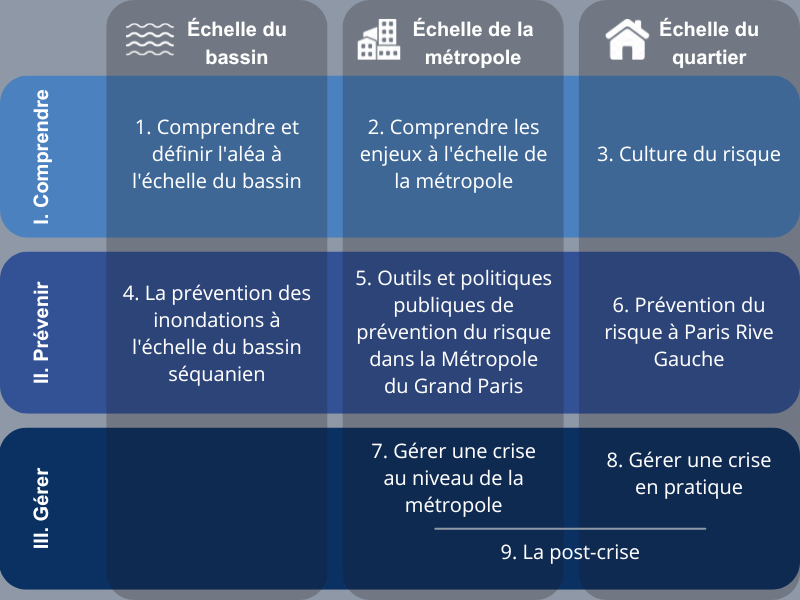

Prise en compte du risque d'inondation dans les projets de renouvellement urbain dans la Métropole du Grand Paris
Source image : Wikimedia Commons, Paris 1910 Inondation gare Saint-Lazare.
La ville de Paris et sa métropole se sont construites autour de la Seine, un fleuve vieux de plus de 12 000 ans, qui façonne et est façonné par la ville. Ce fleuve traverse Paris en son centre et une partie de ses rives sont inscrites sur la liste du patrimoine mondial de l'UNESCO depuis 1991. La même année, la Zone d’Aménagement Concertée (ZAC) de Paris Rive Gauche était créée, et la plus grande opération d’urbanisme dans Paris depuis l'haussmannisation du XIXème siècle débutait. Son nom fait directement référence à la Seine, que le quartier longe sur plus de deux kilomètres. L’influence de la Seine sur le quartier n’est pas limitée aux quais, puisque la quasi-totalité des 130 hectares couverts par le projet est située en zone inondable.
En effet, le fleuve a débordé, et débordera de nouveau. Les crues dans le Pas-de-Calais cet hiver ont rappelé le risque que représentent les inondations. L’UNISDR (United Nations International Strategy for Disaster Reduction) définit un risque comme “la combinaison de la probabilité d’un événement et de ses conséquences négatives” (UNISDR, 2009). En d’autres termes, un risque résulte de la combinaison d’un aléa (ici les inondations) et d’enjeux sur lesquels cet aléa peut avoir des conséquences. Les enjeux sont les éléments ou systèmes qui sont sous la menace de l’aléa : il peut notamment s’agir de personnes, de biens, d’infrastructures ou d’environnements.
Le risque d’inondations est - avec la sécheresse - “l’un des risques naturels les plus importants dans le bassin de la Seine” (Rapport de la Cour des Comptes, 2022). Les dernières inondations importantes ont eu lieu en 2016 et en 2018 ; elles ont coûté respectivement 1,4 milliard et 150 à 200 millions d’euros (ibid). Le titre du rapport de la Cour des Comptes est clair : “la prévention insuffisante du risque d’inondation en Île-de-France”. La prévention est insuffisante tant du côté des collectivités locales que des populations.
Dans ce rapport, nous proposons d’étudier la prise en compte de ce risque à différentes échelles et son application dans les projets de renouvellement urbain à l’échelle locale. Nous parlons de “projets de renouvellement urbain” pour faire référence au fait que ces projets d’urbanisation ne sont pas en étalement urbain mais qu’il s’agit de reconstruire la ville sur la ville. Même sans étendre la ville, la construction en zone inondable continue. Le rapport de la Cour des Comptes étudie les objectifs fixés et les moyens financiers pour prévenir le risque, ainsi que la gouvernance mise en place, mais il n’étudie pas concrètement la manière dont cela s'opérationnalise à l’échelle locale. C’est pourquoi nous avons tenté de le faire, en réalisant une étude de cas sur Paris Rive Gauche. Nous nous demandons comment la prévention du risque inondation et la gestion de crise sont opérationnalisées dans les projets de renouvellement urbain dans la métropole du Grand Paris.
Nous distinguons prévention du risque et gestion de crise. La prévention du risque correspond aux actions mises en place avant la catastrophe, c’est-à-dire avant la concrétisation du risque. Ensuite, pendant la crise, il ne faut plus prévenir mais gérer : un autre réseau d’acteurs est mobilisé. Toute la société est directement concernée en cas de crise, pas seulement les spécialistes des inondations et les décideurs politiques.
Pour comprendre l’opérationnalisation de la prise en compte du risque à l’échelle du quartier, il faut tout d’abord comprendre le risque. Pour cela, il est nécessaire de considérer la manière dont l’échelle locale s’articule avec les autres échelles, en particulier celle du bassin versant et celle de la métropole. L’échelle du bassin versant est importante car l’aléa inondation est défini à cette échelle. En hydrologie, le bassin versant de la Seine correspond à la “portion d'espace terrestre à l’intérieur de laquelle tous les écoulements, en surface ou en profondeur, se dirigent vers le même exutoire (cours d’eau, lac ou mer)”, ici l’estuaire de la Seine (Géoconfluences, 2023). L’échelle de la métropole est intéressante dans les deux sens du mot “métropole” : la métropole en tant qu’organisme politique dont le pouvoir s’applique sur le territoire regroupant Paris et sa petite couronne (Métropole du Grand Paris) et la métropole en tant que produit de la métropolisation, une phase de transition urbaine qui fait passer les sociétés mondiales d’un état majoritairement rural à un état majoritairement urbain (Reghezza-Zitt, 2012, p. 143). L’échelle de la métropole nous intéresse car la vulnérabilité d’un quartier est fondamentalement liée à la vulnérabilité de la ville dont il fait partie. Les réglementations, mises en place à différentes échelles (communes, départements) s’appliquent à cette métropole.
Nous avons donc choisi un plan croisé : chaque chapitre se concentre sur une étape de la prise en compte du risque d’inondation (compréhension, prévention ou gestion de crise) et sur une échelle (bassin versant, métropole ou quartier). Les trois premiers chapitres visent à définir et expliquer (1) l’aléa ou les différents types d’inondations dans le bassin versant de la Seine, (2) les enjeux de la métropole et sa vulnérabilité, et (3) le risque et sa conception par les différents acteurs à l’échelle du quartier. Les trois chapitres suivants se concentrent sur la prévention du risque aux différentes échelles, en cherchant à déterminer les paradigmes qui sont appliqués : s’agit-il de se protéger contre le risque ou d’apprendre à vivre avec ? Les chapitres 7 et 8 étudient la gestion de crise, à l’échelle de la métropole (avec la réalisation d’exercices tels que l’exercice EU Sequana en 2016) et à Paris Rive Gauche. Enfin, après la catastrophe, vient le temps de la post-crise : cette étape encore peu étudiée fait l’objet du dernier chapitre.
Figure 0.1 : Tableau-plan de notre enquête
Méthodologie de notre enquête
Méthode de l’enquête : grands principes
Notre méthode est celle de l’enquête : nous cherchons à décrire le réseau d’acteurs dans la prévention des inondations et la gestion de crise, les différents liens entre eux, les paradigmes selon lesquels ils agissent, pour donner à voir les dynamiques actuelles. Cette méthodologie permet d’utiliser une diversité d’outils et de méthodes d’enquête, que l’on peut classer selon deux catégories : la “collecte de données et organisation de matériaux documentaires”, nécessaire pour brosser le paysage de la recherche dans le domaine que nous étudions ainsi que les publications médiatiques et institutionnelles, et le “travail de terrain” à la rencontre des acteurs (C. Seurat, T. Tari, 2023), pour comprendre le point de vue des différents acteurs et voir comment la prévention du risque est comprise et opérationnalisée. Le travail de terrain a guidé le choix d’une enquête locale dans le 13ème arrondissement de Paris, le quartier où nous étudions. Il nous semblait nécessaire d’ancrer nos recherches dans un lieu que nous connaissions et expérimentons tous les jours.
Notre méthode est interdisciplinaire : nous utilisons notre double formation pour comprendre à la fois les enjeux hydrologiques de l’aléa inondation, les dynamiques socio-économiques et politiques et la rencontre entre les deux. Nous ne cherchons pas à ancrer notre rapport dans une discipline mais à comprendre comment le savoir est produit et discuté, ainsi que la manière dont il est intégré aux politiques et à la construction de la ville.
| Collecte de données et organisation de matériaux documentaires | Travail de terrain, à la rencontre des acteurs |
|---|---|
| Phase d'exploration | |
| Travaux d’hydrologie et d’hydrogéologie | Promenades urbaines |
| Sites et publications des différents acteurs | Formation Référents Crue de la Seine |
| Travaux des géographes | |
| Suivi des médias (Europresse) | |
| Comptes-rendus des réunions publiques du projet Seine-Bassée | |
| Etudes des PPRI de Paris, du Val-de-Marne et de la Seine-Saint-Denis | |
| Phase de travail sur l'échelle de la métropole | |
| Littérature grise (PPRI, PLU) | Réunion publique |
| Travaux des géographes | Entretiens semi-directifs (M. Evo, V. November C. Rey-Thibault, R. Thépot, L. Faytre, P. Komitès) |
| Rapports d’évaluation des politiques publiques (OCDE, Cour des Comptes, Ville de Paris…) | Observations lors des consultations citoyennes pour le PLU de la ville de Paris |
| Observation lors d’une rencontre avec le Maire de Vitry-sur-Seine lors d’une réunion publique pour le quartier des Ardoines | |
| Phase de travail sur l'échelle de la métropole | |
| Stratégie de résilience de la Mairie de Paris | Entretiens semi-directifs (C. Piguet, L. Vion) |
Figure 0.2 : Tableau des outils et méthodes d’enquête
Notre enquête et ses différentes phases
Nous avons débuté notre enquête fin septembre 2023 et elle se termine avec la publication du rapport le 25 avril 2024. Cette enquête représente donc sept mois de travail collectif, que nous pouvons découper en plusieurs grandes phases.
(voir chronologie en annexe.)
1. Premier semestre : s'approprier le sujet
a. Octobre-Novembre : Phase d’exploration
Pendant la première partie de l’année, nous avons cherché à nous approprier le sujet, en explorant ses différents aspects. Pour cela, nous avons utilisé plusieurs méthodes de recherche. Nous avons commencé par faire des recherches sur les moteurs de recherche (Ecosia, Google) et les bases de données (catalogues des bibliothèques de Sciences Po et de l’Université Paris-Cité) en utilisant plusieurs jeux de mots clé : nous avons ainsi exploré des sources primaires et secondaires, avec pour objectif de comprendre à la fois l’aléa dans le bassin versant de la Seine (les différents types d’inondations) et la manière dont le risque est géré (les solutions utilisées, les réglementations existantes, les acteurs). Nous avons également utilisé les médias comme source d’information, en utilisant Europresse pour accéder aux publications depuis 1995 et étudier leur évolution dans le temps.
| Inondations | Résistance / résilience |
|---|---|
| Artificialisation des sols, imperméabilité | Ouvrages de protection |
| Précipitations | Urbanisme, urbanisation |
| Zones inondables | Vulnérabilité |
| Infiltration | Inégalités |
| Changement climatique | Planification et prévention (/PPRI) |
| Pollutions, écosystèmes | Gestion de l’eau, eaux potables |
Figure 0.3 : Tableau des mots clés utilisés lors de la phase d’exploration
Au début, nos recherches se sont réparties en deux axes principaux : les solutions techniques de protection contre les inondations et deux quartiers en renouvellement urbain, Paris Rive Gauche (13ème arrondissement de Paris), et Les Ardoines (Vitry-sur-Seine). En parallèle, nous avons découvert les activités du Centre Européen de Prévention du Risque d’Inondation (CEPRI), et nous avons participé à la formation organisée par celui-ci en partenariat avec la Mairie de Paris : “Référents crue de la Seine”. Cette formation a enrichi notre connaissance de l’aléa inondation, et a montré la pertinence d’une étude du rôle des citoyens dans la gestion des inondations.
b. Décembre : Phase de réflexion sur les différentes échelles et compréhension des réglementations (littérature grise)
Après ce premier panorama, nous avons ressenti le besoin de mieux comprendre la manière dont est réglementée la prévention des inondations : nous avons décidé d’étudier les Plan de prévention des risques d’inondation (PPRI) de trois départements différents : Paris, le Val-de-Marne et la Seine-Saint-Denis. Nous avions alors deux objectifs : étudier la manière dont le risque est défini (entre aléa et enjeux) et comparer Paris et les départements de la petite couronne.
En parallèle, nous avons cherché à définir et comprendre les concepts clés du sujet, en particulier grâce aux travaux des géographes. La géographie nous a donné les méthodes et les concepts pour comprendre et interpréter la littérature grise, en prenant conscience du lien entre risque et territoire. Nous avons commencé à travailler sur la vulnérabilité de la métropole.
En décembre, nous avons rencontré Cassandre Rey-Thibault, post-doctorante en géographie qui étudie la relation entre risque et territoire, pour échanger sur notre sujet et les perspectives que nous envisagions pour la suite de notre enquête. Elle nous a expliqué la distinction entre deux concepts clés qu’elle utilise dans ses travaux : la prévention du risque et la gestion de crise, qui s’articulent dans la gestion des inondations. Nous avons choisi d’utiliser ces termes dans la formulation de notre problématique pour le rapport intermédiaire de notre enquête. La problématique était alors : comment parvenir à organiser et à opérationnaliser la prévention du risque d'inondation et la gestion de crise dans la Métropole du Grand Paris ? Elle s’est progressivement imposée comme le cadrage le plus pertinent pour ce sujet, car elle permet de synthétiser les différentes questions de recherche qui ont émergé à la fin du premier semestre. Ces questions portaient alors sur quatre grandes thématiques :
a. la répartition des prises de décisions entre les différentes échelles et le fonctionnement du réseau d’acteurs, avec l’idée de comparer Paris et les départements de la petite couronne,
b. l’opérationnalisation des concepts de résilience, de prévention du risque et de gestion de crise dans les opérations de renouvellement urbain,
c. la pertinence de se référer à la crue de 1910 dans la conception du risque d’inondation dans la Métropole du Grand Paris,
d. la place des citoyens et leur conception du risque d’inondation.
2. Deuxième semestre : approfondissement et réponse à la problématique
Le deuxième semestre a été consacré en grande partie au travail de terrain. Les matériaux documentaires utilisés étaient plus directement liés aux entretiens que nous conduisions. Le sujet s’étant resserré, nous avons plutôt cherché à approfondir l’étude de la prise en compte des inondations aux différentes échelles : dans un premier temps à l’échelle de la métropole et du bassin versant, puis dans un second temps à l’échelle du quartier avec l’étude du projet Paris Rive Gauche.
a. Phase de travail à l’échelle de la métropole et du bassin versant
Nous avons cherché à comprendre la gestion des inondations au niveau de la métropole, en conduisant cinq entretiens différents (voir fiches acteurs) :
Au sein du CEPRI, Marie Evo réfléchit à la manière d’augmenter la résilience des territoires pour “ne plus subir les crises mais les anticiper”. Elle accompagne les collectivités territoriales dans des démarches de réduction de la vulnérabilité et de partage de bonnes pratiques, notamment à travers la construction de Programmes d’Actions de Prévention des Inondations (PAPI). Cet entretien, planifié suite à la formation Référents Crue de la Seine, nous a permis d’entrer plus en détail dans la compréhension du réseau d’acteurs de la gestion des inondations, et de comprendre le rôle clé de l’urbanisme et de la culture du risque.
Leur connaissance du sujet nous a permis de répondre à un certain nombre de questions sur la place des géographes dans notre enquête, sur le PPRI et sur l’exercice de gestion de crise EU Sequana, organisé en 2016 par la Secrétariat Général de Défense et de Sécurité de la Préfecture de Police de Paris. Cette rencontre très enrichissante nous a permis de mieux définir notre sujet, de mieux le structurer, et de définir nos prochains entretiens.
Membre du comité d’experts du CEPRI, Régis Thépot a travaillé pour plusieurs EPTB et en 2014, il a été à l’origine de l’étude de l’OCDE sur la gestion des risques d’inondation en Île-de-France. Pendant notre entretien, Régis Thépot nous a transmis sa conception de la prévention des inondations, les critiques qu’il pouvait faire, les points de tension mais aussi ses raisons d’être optimiste.
Recommandé à la fois par Valérie November et Régis Thépot, Ludovic Faytre est une personne incontournable pour notre sujet. L’entretien nous a permis d’explorer en profondeur les différentes tensions autour de la prévention des risques et la nécessité de “composer” avec le risque, d’en faire “une composante de l’aménagement et non une contrainte”.
La mairie de Paris est un acteur majeur dans la prévention des inondations sur le territoire parisien : il nous semblait nécessaire de rencontrer une adjointe chargée de cette prévention. Pénélope Komitès n’est pas directement responsable de la gestion de la Seine à Paris, mais ses compétences sur la résilience sont très liées à ces enjeux. Cet entretien nous a permis de mieux comprendre comment est abordée la gestion des risques par la mairie de Paris, et comment la Stratégie de résilience de la Ville de Paris est mise en place.
Nous nous sommes ensuite éloignées de l’objectif de comparaison entre différents départements lorsque nous sommes rentrées plus en détail dans les travaux des géographes, et notamment lorsque nous avons compris l’importance de l’échelle du quartier et du renouvellement urbain dans la gestion des inondations. Nous avons décidé de laisser de côté la comparaison entre trois départements pour se concentrer sur l’approfondissement de l’échelle locale, en réalisant une étude de cas sur Paris Rive Gauche.
b. Phase de travail à l’échelle du projet de renouvellement urbain Paris Rive Gauche
Comme nous avons pu remarquer dans le décalage entre la volonté politique, les discours, les concepts, et leur application, nous avons voulu regarder concrètement, à l’échelle du quartier, la manière dont la prévention des inondations et la gestion de crise sont opérationnalisées. Le choix de Paris Rive Gauche s’est imposé pour plusieurs raisons.
Il s’agit tout d’abord de la plus grande opération d’urbanisme à Paris depuis l’haussmannisation du XIXe siècle. La ZAC a été créée en 1991 et s’étend sur 130 hectares. La construction de ce “méga projet” (D. Senly, 1999) a été retardée pour des raisons de financement notamment. Elle est encore en cours, notamment dans le secteur Bruneseau-Masséna. Notre objectif était au départ de comparer la prise en compte de la prévention des inondations à différentes étapes de la construction. Nous faisions l’hypothèse que la prise en compte des inondations a évolué, puisque les PPRI n’existaient pas encore en 1991.
Nous étudions à l’Université Paris-Cité depuis 2020 et mener cette enquête nous permet d’avoir un nouveau regard sur ce quartier. Ancrer notre enquête dans un territoire précis était une demande dans notre sujet d’origine, basé sur l’Île-de-France, mais nous avons décidé d’ajouter un ancrage à l’échelle de quartier pour rendre notre étude plus concrète encore. Cela nous permet de mieux comprendre la manière dont les acteurs qui construisent la ville s'emparent des savoirs, en particulier de la connaissance du risque.
Cette étude s’est finalement révélée compliquée car nous n’avons eu accès aux architectes et urbanistes de la zone qu’à la fin de notre enquête. C’est une contrainte extérieure qui a aussi modifié le déroulement de l’enquête. Nous avons toutefois pu réaliser deux entretiens et comparer Paris Rive Gauche à d’autres quartiers comme les Ardoines et Bercy-Charenton. Nous avons rencontré Claire Piguet du cabinet Ateliers Lion et Ludovic Vion de la SEMAPA.
Claire Piguet coordonne aujourd’hui tous les projets du cabinet d’architectes. Ateliers Lion a remporté une consultation de la SEMAPA en 2002 pour l’aménagement de la zone Bruneseau-Masséna. Claire Piguet nous a expliqué quel était leur point de vue à l’époque de cette consultation, et ce qui serait différent aujourd’hui. Elle a mis en avant les différents enjeux à prendre en compte lors d’un projet de quartier comme celui-ci. Elle n’est pas directement responsable de la prévention des inondations et l’entretien s’est déroulé différemment des autres : elle a commencé par nous dire qu’elle n’avait “jamais entendu parlé [des inondations] sur ce projet”, que d’autres enjeux étaient bien plus importants.
La SEMAPA combine les fonctions d’aménageur et de maître d’ouvrage pour la Ville de Paris, qui la finance à hauteur de 92% (les 8% restants étant financés par la Région Île-de-France). Elle est chargée aujourd’hui de 7 opérations d’aménagement urbain sur le territoire parisien, dont Paris Rive Gauche et Bercy-Charenton. Après l’entretien avec Claire Piguet, nous avions l’impression que ce risque était peu pris en compte dans l’aménagement. Nous voulions comprendre la position de la SEMAPA, et plus précisément le rôle de la maîtrise d’ouvrage dans la prévention des inondations.
Cette dernière phase nous permet de comparer les discours des acteurs de l’aménagement avec ceux des spécialistes des inondations.
Les limites de l’enquête
Notre enquête présente plusieurs faiblesses, notamment car nous n’avons pas réellement eu accès à deux acteurs importants. Premièrement, nous n’avons pas rencontré de constructeurs, ce qui nous aurait permis de mieux comprendre leur conception de la prise en compte des inondations. Nous n'avons pas réussi à entrer en contact avec eux, puis, par souci de temps, avons choisi de nous focaliser sur les acteurs de la maîtrise d'ouvrage à la fin de nôtre enquête. Ateliers Lion et la SEMAPA sont responsables de la maîtrise d’ouvrage de certains équipements mais il aurait été intéressant d’approfondir davantage le monde de la construction. Deuxièmement, nous n’avons pas eu accès à la Préfecture de Police qui est l’acteur principal de la gestion de crise. Il aurait été intéressant de comprendre leur conception des inondations, et d’obtenir des informations sur la gestion de crise à l’échelle du quartier.
De plus, nous aurions pu mieux avoir une meilleure utilisation des ressources médiatiques, et un meilleur recensement des publications relatives à notre sujet. La diversité des méthodes d’enquête rend difficile la bonne utilisation de toutes les méthodes différentes et cette enquête pourrait être approfondie différemment.
Cela concerne aussi les différents sujets relatifs à la prise en compte des inondations : nous avons choisi un angle (la prise en compte du risque dans l’urbanisme), mais nous avons dû laisser de côté des points d’intérêts majeurs. Il s’agit notamment de la comparaison entre les trois départements et la question des inégalités, l’impact sur l’environnement des inondations et la question de la pollution en aval de Paris ou encore l’impact du changement climatique. Nous aurions également aimé approfondir davantage le rôle des citoyens dans la prévention du risque et la gestion de crise. Il a été envisagé à un moment d’étudier les poursuites de la formation Référents Crue de la Seine car il avait été annoncé qu’un groupe de citoyens référents serait créé suite à la formation, mais cela n’a pas vu le jour.
Cartographie des acteurs
Au début de notre enquête, il était difficile de saisir le réseau d’acteurs et son fonctionnement à cause du grand nombre d’échelles administratives et de réglementations impliquées. Au fur et à mesure, nous avons commencé à comprendre la distinction entre les acteurs chargés de la prévention du risque et ceux chargés de la gestion de crise. Les premiers sont surtout les acteurs de l’aménagement urbain, mais aussi des acteurs spécialisés dans la gestion des cours d’eau ou la prévention des inondations. Les seconds sont plutôt des acteurs de sécurité civile, à qui revient la compétence administrative de gestion de crise. Nous avons aussi identifié un troisième pôle d’acteurs, qui sont ceux qui créent les connaissances sur le risque (sur l’aléa, la vulnérabilité du territoire, etc). Nous avons représenté les acteurs principaux de ces trois pôles.
Pour rendre la cartographie plus lisible, nous avons préféré garder une version sans les flèches indiquant les interactions entre les acteurs, que nous expliquons dans les différents chapitres. Elle reste difficile à comprendre avant d’avoir lu ce rapport, mais il est possible de s’y référer pendant la lecture pour mieux saisir le rôle de chaque partie prenante.
Les entretiens de notre enquête se situent plutôt dans la partie “prévention du risque”. Nous avons identifié deux raisons principales à cette orientation. Tout d’abord, comme nous avons pu l’évoquer lors de nos entretiens (notamment avec Valérie November et Cassandre Rey-Thibault), le monde de la gestion de crise comporte peu d’acteurs spécialisés dans les inondations. La plupart des acteurs font de la gestion de crise, mais sans nécessairement avoir des connaissances ou des formations sur ce sujet. Nous avons essayé d’entrer en contact avec la Préfecture de Police, mais n’avons pas réussi. On peut supposer que les acteurs de sécurité civile sont en ce moment très occupés avec l’imminence des Jeux Olympiques et Paralympiques de Paris. L’autre raison est dûe au sujet que nous avons choisi pour notre enquête : nous avons préféré l’axer autour de la prise en compte des inondations dans l’urbanisme, ce qui implique de se focaliser principalement sur la prévention de ce risque.
Partie I. Comprendre
Avant de prévenir le risque ou de gérer la crise, il faut le comprendre. La compréhension du risque implique à la fois la production de savoirs sur ce risque, et l’intégration de ces savoirs par les acteurs. Les trois premiers chapitres visent à explorer cela à différentes échelles, contribuant aussi à dresser progressivement la cartographie des acteurs.
Chapitre 1. Comprendre et définir l'aléa à l'échelle du bassin
Dans la gestion des risques, la première phase est celle d’étude de l’aléa. L’aléa peut être défini comme un événement possible qui implique une perturbation d’un milieu. Un aléa peut être naturel (séisme, inondation), ou technologique (rupture de barrage). Dans cette enquête, nous nous intéresserons à un seul type d’aléa : l’aléa inondation, au sein de la Métropole du Grand Paris. Qu’est-ce qu’une inondation ? Quelles sont les caractéristiques de cet aléa, et qui les définit ? Nous répondrons à cette question à l’échelle du bassin versant de la Seine.
Une métropole soumise à plusieurs types d’inondations
En réalité, il n’existe pas un aléa d’inondation dans la Métropole du Grand Paris, mais trois différents types d’inondations (Episeine, 2019). Le plus connu d’entre eux est l’inondation par débordement fluvial, aussi appelée crue. La plupart du temps, un fleuve s’écoule dans une section restreinte, qu’on appelle le lit mineur (voir schéma ci-dessous). De manière périodique, lors d’épisodes pluvieux intenses, le fleuve entre en période de crue, l’eau monte, et s’écoule alors sur une largeur beaucoup plus grande, que l’on appelle le lit majeur.
Figure 1.1 : La structure du cours d’eau (site l’Observatoire Poissons Seine Normandie)
Le deuxième type d’inondation est celui par remontée de nappes (Episeine, 2019). Les rivières sont connectées avec les nappes souterraines ; ainsi, le niveau de l’une influence le niveau de l’autre. Lors d’une crue, la nappe alluviale peut remonter, et inonder les sous-sols et la surface, même dans des zones éloignées du cours d’eau. La descente des eaux dans les endroits inondés par remontées de nappe est très lente, et peut s’étaler sur plusieurs semaines voire mois, car il faut attendre que le niveau du fleuve redescende, et que l’eau s’infiltre à nouveau.
Enfin, le dernier type d’inondation est l’inondation par ruissellement pluvial (ibid). Lors de pluies intenses sur un temps très court, les réseaux d’évacuation des eaux de pluies saturent. Si les sols sont imperméables, à cause des constructions humaines ou des pratiques agricoles intensives, l’eau ne peut pas s’infiltrer. Elle ruisselle alors dans des zones inhabituelles, et inonde rapidement les sous-sols et la chaussée dans les endroits bas topographiquement. Ces inondations sont rapides et localisées. Leur répétition peut causer des dommages coûteux.
Finalement, lors des événements extrêmes qui causent des crues importantes, il est fréquent que les phénomènes se combinent : le fleuve déborde (crue), notamment parce que l’eau ne s’infiltre plus (ruissellement), et les nappes remontent, inondant les sous-sols et des endroits potentiellement éloignés du fleuve.
Le bassin versant de la Seine
La Seine est un fleuve qui prend sa source sur le plateau de Langre, et se jette dans la Manche quelques 700 kilomètres plus loin. Le fleuve a une structure en méandres caractéristique des systèmes de basse énergie, c’est-à-dire avec peu de pente (Maillot, 2019). La Seine possède de nombreux affluents, dont les principaux sont l’Yonne, la Marne et l’Oise.

Figure 1.2 : Carte du bassin amont de la Seine (site de Seine Centrale Urbaine)
Ce sont ces affluents qui déterminent les dynamiques des inondations par débordement. Lors d’un épisode pluvieux sur le bassin amont, la crue commence sur cette partie du bassin, dans plusieurs affluents en même temps (ou en décalé), selon les conditions météorologiques. Une onde de crue se propage vers l’aval. Ce qui va déterminer la hauteur du pic de crue dans la métropole du Grand Paris, c’est l’arrivée de plusieurs ondes de crues en même temps (ou en décalé).
| Qu'est-ce qu'une crue centennale ? Pour caractériser une crue, on peut utiliser sa hauteur d’eau, son débit, ou encore la probabilité qu’elle arrive. Ces trois critères sont interreliés. L’utilisation de la probabilité qu’une crue d’un certain débit et d’une certaine hauteur arrive a donné lieu aux appellations “crue décennale”, et “crue centennale”. Ces appellations peuvent être trompeuses, et faire croire qu’une crue décennale arrive tous les dix ans, et qu’une crue centennale arrive tous les cent ans. En réalité, cela fait référence à la probabilité que la crue ait lieu chaque année : une crue décennale a une chance sur dix de se produire chaque année, une crue centennale a une chance sur cent, etc. |
Le bassin de la Seine est également un bassin transformé par l’activité humaine. En effet, dix-sept millions de personnes y vivent, soit environ un quart de la population française. De nombreuses zones sont urbanisées, tandis que d’autres sont cultivées. Il s’agit également d’une zone économique d’importance, avec notamment deux ports importants situés sur le fleuve, celui de Rouen et celui de Gennevilliers. Afin de garantir la navigabilité de la Seine et de la Marne, des aménagements ont été faits pour réguler le niveau d’eau (Maillot, 2019). Le lit du fleuve est régulièrement dragué, c’est-à-dire raclé. Cela enlève les sédiments récents, pour laisser apparaître les alluvions anciens. Additionnellement, les berges sont endiguées sur une partie du cours d’eau, notamment dans la Métropole du Grand Paris et à Rouen. Des barrages de navigation et des écluses maintiennent un niveau d’eau constant (hors périodes de crue) qui permet la navigation. Enfin, il existe quatre barrages-réservoirs sur les affluents de la Seine, qui ont une capacité de stockage de 830 millions de mètres cubes, et dont le rôle est de réduire le pic de crue des inondations et de soutenir le débit d’étiage (ibid).
Figure 1.3 : Carte de l’occupation des sols dans le bassin parisien (Maillot, 2019, p.41)
Au-delà du lit du fleuve, les réseaux souterrains (égouts, transports en commun, etc) présents dans la métropole francilienne, ainsi que les nombreux pompages des nappes qui en découlent, modifient le fonctionnement local de la nappe, en créant un milieu fortement hétérogène, avec des barrières et des chemins d’écoulement préférentiels difficiles à connaître (ibid, p.28).
Comment les connaissances sur le risque inondation sont-elles acquises ? Qui définit l’aléa ?
Connaître le fonctionnement du bassin versant et des phénomènes d'inondation est important pour les acteurs, qui ont besoin de certaines données pour gérer le risque engendré. Ces données sont les surfaces inondées, la hauteur d’eau, et la durée durant laquelle la surface sera inondée. Acquérir de telles données suppose de modéliser des inondations. Dans le domaine des inondations, le modèle qui a été le plus utilisé est celui des casiers : on définit des “boîtes”, qui sont caractérisées par leur contours, leur superficie et leur pourcentage de surface inondée (DRIEE, 2012).
En Île-de-France, les cartographies des zones inondables sont définies par la Direction Régionale et Interdépartementale de l’Environnement, de l’Aménagement et des Transports d’Île-de-France (DRIEAT), qui est issue de la fusion d’autres directions régionales, dont la DRIEE, et auparavant la DIREN, qui s’occupaient en leur temps des cartographies. Ces directions ont fourni plusieurs types de données sur les inondations en Île-de-France, résumées dans la figure 1.4.
| Nom | Description |
|---|---|
| Plus Hautes Eaux Connues (PHEC) | Les repères de crues permettent de savoir jusqu’où est allée l’eau lors de la plus grande crue connue (1910 pour la Seine). On se base donc sur cette ligne des PHEC pour savoir jusqu’où l’eau est allée, et où elle peut donc venir. Avant les PPRI, c’étaient les données utilisées par les aménageurs (entretien avec L. Vion). Cependant, ces données ne sont pas disponibles partout en Île-de-France, et n’informent pas sur la hauteur d’eau en différents points (IAU Île-de-France, 2017, p.10). |
| Cartographie du PPRI | Dans la plupart des départements, on projette la hauteur d’eau des PHEC sur la topographie actuelle pour avoir la hauteur d’eau en tout point. La cartographie du PPRI ne prend pas en compte les mesures structurelles, c’est-à-dire les barrages-réservoirs, les murettes anti-crues, et autres mesures de protection. De toutes les cartographies, celle du PPRI est la seule réglementaire, la seule à s’appliquer aux documents d’urbanisme dont le PLU (ibid). |
| Cartographie de la SLGRI | La cartographie de la Stratégie Locale de Gestion des Risques d’inondation (SLGRI) est imposée par la Directive européenne relative aux inondations uniquement pour les territoires à risque d’inondation. Il y a trois scénarios correspondant à des événements de type fréquent, moyen ou extrême. Cette cartographie prend en compte les mesures structurelles (ibid). |
| Scénarios régionaux | Pour cet ensemble de cartographies, plusieurs scénarios sont définis par rapport à la crue de référence, celle de 1910. L’idée est d’appliquer un coefficient au débit de chaque cours d’eau, pour modéliser des crues intermédiaires, et une crue plus forte que celle de 1910. Ainsi, le scénario R0.8 correspond à une crue de la Seine type 1910 mais avec un débit inférieur de 20%. Ces scénarios prennent en compte les ouvrages de protection et considèrent qu’ils fonctionnent tous. |
| ZIP - ZICH | Les scénarios régionaux sont croisés avec le modèle numérique de terrain LIDAR pour obtenir une hauteur d’eau en chaque point de la carte (ibid). Cette cartographie prend en compte de potentielles ruptures des digues de protection (DRIEAT, 2021, p.7). |
Figure 1.4 : Tableau présentant les différents types de données disponibles sur les inondations en Île-de-France
Comme nous pouvons le voir, le seul type d’inondation modélisé par les services de l’Etat est l’inondation par débordement fluvial. Les inondations par remontées de nappes et par ruissellement commencent à être modélisées, notamment les premières, grâce à la réalisation d’une thèse financée par l’EPTB Seine Grands Lacs (Maillot, 2019). Ce travail est fait dans la recherche académique, mais n’est pas encore traduit dans des cartographies réglementaires. L’absence de modélisation du ruissellement dans les cartographies PPRI peut être expliquée par les difficultés techniques à modéliser ce phénomène, comme nous l’a expliqué Marie Evo lors de notre entretien.
”Il y a quelques PPRI en France qui commencent à prendre en compte le ruissellement, mais c’est vraiment le phénomène d’inondation qui est difficile à analyser, c’est un phénomène qui est étudié depuis peu, et sur lequel il y a encore beaucoup de choses à faire. [...] Ca fait longtemps qu’on sait faire des modèles 1D, 2D, voire 3D, de débordement, de torrentiel ou autre, et de montée du niveau de la mer, mais le ruissellement c’est plus compliqué parce que dans les données de votre terrain il faut caractériser l’imperméabilisation, et la ville change, il faut suivre l’évolution de l’urbanisation, et ça prend aussi en compte la capacité de la ville à évacuer l’eau, donc les réseaux d’assainissement, et ça c’est très peu connu.” (entretien avec M. Evo, p.7)
D’autre part, nous pouvons remarquer que dans tous les scénarios, la crue de référence qui est utilisée est la crue centennale. Pour la Seine, il s’agit de la crue de 1910. En janvier 1910, après plusieurs mois pluvieux et un épisode de gel ayant accentué l’imperméabilité des sols, la Seine, la Marne, l’Yonne et le Loing sont entrés en crue. L’inondation a duré une vingtaine de jours et le pic de crue a atteint 8,62 mètres au pont d’Austerlitz le 28 janvier (Episeine). Ce scénario de référence est celui d’une crue lente, avec une montée des eaux d’en moyenne un mètre par jour, et une décrue de 35 jours. Les modèles ne prennent en compte que les affluents principaux, qui étaient en jeu pendant la crue de 1910. Cela donne donc des scénarios de crues lentes, qui peuvent effacer des mémoires d’autres types de crues. Or, lors de la crue de juin 2016 par exemple, c’est le Loing, un affluent plus petit, qui a provoqué la crue. Il s’agit d’un bassin plus réactif, ce qui a causé une montée des eaux plus rapide, ce qui a surpris les Franciliens.
Ainsi, l’aléa inondation est défini dans la réglementation par l’Etat, et est uniquement un aléa inondation par débordement, avec un biais dû à l’utilisation de la crue centennale comme référence : on considère que les zones inondables sont celles qui ont déjà été inondées en 1910, ou qui le seraient en cas de crue similaire. Il est nécessaire de faire des modèles, mais ils sont forcément réducteurs et contiennent des erreurs, dans une certaine mesure, dont il faut être conscient lorsqu’on les met en œuvre.
Cependant, pour d’autres acteurs, le type d’inondation prioritaire n’est pas forcément le même. Cela a été visible dans les entretiens avec Pénélope Komitès et Régis Thépot.
“Je suis beaucoup plus inquiète sur des phénomènes de ruissellement et de pluies intenses non gérées. Enfin non gérables, au stade où on en est aujourd'hui. Même avec la création du bassin de stockage. [...] Parce que j'ai le sentiment qu'on sous-estime l'ampleur du phénomène.” (entretien avec P. Komitès, p.15)
“En fait, de manière paradoxale, à mon avis, le risque le plus important en région parisienne, c'est le risque par remontée de nappe. Pourquoi ? [Parce qu’on] peut très bien avoir des scénarios où on ne verra rien. Et la ville sera paralysée. Plus de métro. Plus d'internet. Plus rien, etc. Parce qu'en fait, les sous-sols seront inondés. Et ce qui sera, à mon avis, extrêmement difficile à comprendre par la population. Je pense qu'il va y avoir, si ça arrive, des réactions extrêmement vigoureuses.” (entretien avec R. Thépot)
Ce qui inquiète ces acteurs n’est pas seulement le phénomène en lui-même, mais aussi le manque de connaissances à son sujet, et le manque de prise en compte dans les politiques publiques. Pénélope Komitès pense que l’on “sous-estime le phénomène” d’inondation par ruissellement, tandis que Régis Thépot craint les réactions des acteurs et des citoyens dans une situation de remontée de nappe qu’ils ne comprennent pas par manque de connaissances.
Malgré des manques dans les connaissances, et des biais assumés dans la façon dont les inondations sont modélisées en Île-de-France, la recherche sur l’aléa inondation a été historiquement privilégiée par rapport à d’autres compréhensions du risque. C’est notamment ce qui est ressorti dans notre entretien avec les géographes.
“Pour poursuivre, ce qu’il est important de comprendre, c'est que la compréhension des risques, elle a longtemps été aléa-centrée. Ce côté, c'est des choses qui arrivent de l'extérieur et on va d'abord étudier les mécanismes physiques qui vont conduire à la production de l'aléa, à enfin l'hydrologie, la sismologie etc.” (entretien avec C. Rey-Thibault).
Étudier un risque, ce n’est donc pas seulement étudier un phénomène “naturel”, mais aussi savoir en quoi les sociétés humaines y sont vulnérables.
Chapitre 2. Comprendre les enjeux à l'échelle de la métropole
Un risque résulte de la combinaison d’un aléa et d’enjeux sur lesquels cet aléa peut avoir des conséquences (UNISDR, 2009). Dans ce chapitre, nous allons donc définir le territoire de la Métropole du Grand Paris par ses enjeux sur lequel l’aléa peut avoir des effets, et par ses vulnérabilités. Le référentiel national de vulnérabilité de la SNGRI définit ce concept comme “la propension pour des personnes, des biens et des activités à être affectés par une inondation” (Cerema, 2016, p. 11). Les acceptions des formes que peut prendre la vulnérabilité sont multiples, notamment car c’est un concept situé ; profondément ancré dans le territoire auquel il s’applique. Comme l’explique Magali Reghezza, deux types de facteurs influencent la vulnérabilité d’un territoire : les facteurs spécifiques à l’aléa et ceux spécifiques aux enjeux (Reghezza, 2012, p. 140-142). On trouve dans certains rapports d’évaluation des politiques publiques le constat selon lequel la vulnérabilité de ce territoire est relativement peu étudiée, et donc mal identifiée et mal prise en compte (OCDE, 2014, Cour des Comptes, 2022). Comme l’explique l’étude de l’OCDE de 2014, le regain d’intérêt pour cette question date des crues sur le bassin amont de la Seine en 2013, mais la vulnérabilité reste peu définie. D’après Ludovic Faytre, depuis quelques années la connaissance de l’aléa progresse, mais “il n’en est pas de même pour l’évaluation de vulnérabilité” (Faytre, 2017, p. 1). Or, comme il nous l’a expliqué lors de notre entretien, il y a un besoin crucial d’évaluation de cette vulnérabilité pour gérer le risque.
Le terme de “métropole” désigne l’entité institutionnelle, mais aussi un type d’espace urbain particulier, formé par le phénomène de métropolisation. Cela confère au territoire une vulnérabilité spécifique (Reghezza, 2006). C’est pour cette raison que nous avons choisi de travailler à l’échelle de la métropole dans ce chapitre. Nous allons tâcher d’expliciter les vulnérabilités de ce territoire, afin de le définir. Nous les regroupons selon les types de facteurs de vulnérabilité donnés par Marie Evo (entretien avec M. Evo, p. 3-4).
Il faut bien sûr mentionner que la métropole n’est pas un territoire homogène, c’est un ensemble composé de différents espaces aux conditions politiques, économiques et sociales différentes. Par ailleurs, d’après Régis Thépot, les vulnérabilités changent en fonction des départements, et Paris est mieux protégé que les autres (entretien avec R. Thépot). Cela est dû au fait que les murettes anti-crues de la ville de Paris ont été construites au niveau de la crue de 1910, tandis que celles des autres départements ont souvent été construites au niveau de la crue de 1924 (7,32 mètres à l’échelle d’Austerlitz).
La Métropole du Grand Paris est un territoire vulnérable car modifié par les activités humaines
Tout d’abord, la forte densité humaine et les nombreuses activités qui prennent place dans la Métropole du Grand Paris ont entraîné des modifications physiques du territoire, qui peuvent le rendre plus vulnérable à l’aléa. C’est une conséquence du processus de métropolisation du territoire. D’après Magali Reghezza, ce processus résulte de l’intégration de certains espaces urbains au processus de mondialisation (Reghezza, 2006, p. 41), et engendre un changement de nature des activités, la concentration des enjeux, des infrastructures critiques et des richesses sur un territoire, le développement des réseaux, et notamment un encombrement des sous-sols (ibid, p. 236).
En premier lieu, les activités humaines ont causé certains changements directs de la morphologie, de la topographie et des sols de ce territoire. Comme nous l’avons vu dans le chapitre précédent, la modification des lits des cours d’eau et l'artificialisation du lit de la Seine transforment la manière dont l’inondation affecte le territoire. Comme l’explique Régis Thépot, “On a construit la ville dans un marais. Une partie des boulevards des maréchaux correspond aussi à des anciens lits de cours d'eau. Donc, on sait très bien que s'il y a une grande inondation qui va durer longtemps, vous avez des rivières qui vont se reconstituer en sous-sol.” (entretien avec R. Thépot). Les personnes que nous avons interrogées mentionnent que la métropole est très vulnérable aux remontées de nappes, notamment car ses sous-sols sont creusés par de multiples réseaux urbains tels que les caves, les catacombes et les réseaux de transports comme le métro (entretien avec P. Komitès, p. 15, entretien avec R. Thépot). Les réseaux d’électricité et d’assainissement des eaux sont aussi en sous-sol. Pour la plupart, ces cavités sont mal connues et complexes à cartographier (entretien avec M. Evo, p. 7). Or comme nous l’a expliqué Marie Evo, l’eau des nappes pourrait y passer et engendrer de fortes perturbations (ibid). Ce processus de développement urbain a également provoqué une artificialisation des sols, qui empêche les eaux pluviales de s’infiltrer et rend la ville plus vulnérable aux inondations par ruissellement. Désimperméabiliser les sols est quelque chose de compliqué, notamment en raison des réseaux souterrains, qui pourraient être fragilisés par des infiltrations d’eau de pluie (entretien avec P. Komitès, p.15).
Par ailleurs, la Métropole du Grand Paris est un territoire qui peut être vulnérable aux changements climatiques. Il s’agit d’une conséquence indirecte des activités humaines. Comme l’explique le diagnostic de vulnérabilité de la Ville de Paris de 2021, ils peuvent avoir des effets propres à un territoire fortement urbanisé et au fonctionnement métropolitain (Ville de Paris, 2021). Cette vulnérabilité étant encore plus difficile à définir car il faudrait connaître d’abord la manière dont le changement climatique va affecter l’aléa, ce qui ne sera pas approfondi ici.
Ce territoire concentre les enjeux
Le territoire métropolitain se définit principalement par le fait qu’il concentre de grands enjeux dans tous les domaines. Il s’agit d’une des caractéristiques du phénomène de métropolisation (Reghezza, 2006, p. 41). Ce regroupement de personnes, d’activités, de centres décisionnels, crée une forte vulnérabilité pour le territoire. Comme nous l’ont bien fait comprendre tous nos acteurs interrogés, l’exposition de ces enjeux à l’eau pour une durée prolongée pourrait avoir des effets dévastateurs : “j'ai tendance à croire que ce serait bien pire que la pandémie, même en termes économiques, en termes de désorganisation du territoire, en termes d'autres choses, parce que l'eau ça détruit.” (entretien avec L. Faytre, p. 5). Bien que les personnes soient fortement concentrées, une inondation ne ferait que très peu de victimes, car il s’agit de montées d’eaux lentes et relativement prévisibles (Reghezza, 2006, p. 94-96). En revanche, les bâtiments et les infrastructures subiraient des dommages majeurs (ibid, p. 97-106). La Métropole du Grand Paris regroupe d’importantes fonctions politiques, économiques et culturelles par exemple, dont les locaux pourraient être endommagés car ils se trouvent en zone inondable. Par exemple, le rapport de l’OCDE explique que “une crue majeure de la Seine aurait aujourd’hui des impacts potentiels importants sur le bien-être, le fonctionnement des institutions et les entreprises” (OCDE, 2014, p. 5). Il estime que le coût des dommages directs pourrait être compris entre 3 et 30 milliards d’euros (ibid, p6).
Figure 2.1 : Les activités économiques parisiennes situées en zone inondable (Reghezza-Zitt, 2006)
Figure 2.2 : Etablissements culturels exposés à l’inondation (Reghezza -Zitt, 2006)
Parmi les enjeux concentrés dans la Métropole du Grand Paris, on compte de nombreuses infrastructures susceptibles d'entraîner d’autres risques technologiques ainsi que des pollutions en cas d’inondation. On peut par exemple penser aux nombreuses installations classées établissements Seveso qui se trouvent en zone inondable (DRIEAT, 2023). Les “sur-aléas technologiques” pouvant causer des “dommages à l’environnement” par effet domino sont une source de vulnérabilité identifiée par le référentiel national de vulnérabilité (Institut Paris Région, 2017, p. 33). Celui-ci recense les Installations Classées pour la Protection de l’Environnement (ICPE) et les établissements Seveso, et rappelle que beaucoup de secteurs de la Métropole du Grand Paris ont été des lieux de développement industriel important, certains encore en activité et d’autres abandonnés (ibid). Des eaux circulant sur ces terrains, endommageant les installations, ou empêchant leur fonctionnement, pourraient avoir des conséquences dramatiques sur l’environnement, la santé des citoyens, et l’activité économique.
Figure 2.3 : Localisation des établissements classés au titre des ICPE - Canalisations de transport de fluides sous pression (Institut Paris Région, 2017)
Paris est la capitale de la France, ainsi qu’une ville globale insérée dans la mondialisation. La paralysie que pourrait causer une inondation sur le territoire de la Métropole du Grand Paris pourrait donc s’étendre à un territoire plus vaste, et avoir d’importantes conséquences sur l’économie et la politique françaises notamment, en entraînant une crise plus généralisée. Comme le rappelle Magali Reghezza dans sa thèse, “l’aire urbaine parisienne” regroupe 23% des emplois nationaux, plus de la moitié des sièges et des cadres d’entreprises, ainsi que d’importantes fonctions politiques. Beaucoup des établissements et des installations de ces entreprises et institutions pourraient être affectés par une inondation (Reghezza, 2006, p. 43).
Un territoire au fonctionnement métropolitain qui amplifie la vulnérabilité
La concentration d’enjeux ne suffit pas à définir la métropole. Celle-ci a un fonctionnement particulier, qui crée aussi des vulnérabilités.
Tout d’abord, le territoire métropolitain est fortement dépendant de ses réseaux critiques, qui sont vulnérables. Les réseaux critiques sont les ensembles d’installations qui ont “une importance vitale pour le fonctionnement d’une économie en particulier ou de la société humaine en général” (Moatty, Reghezza, 2018). Ces réseaux sont très vulnérables, que ce soient l’électricité et l’énergie, les télécommunications, les transports, mais surtout l’assainissement de l’eau. Par exemple, la vulnérabilité du système d’assainissement est augmentée par les connexions et les interactions entre les réseaux d’eaux usées, les structures d’assainissement, et les eaux pluviales et d’inondation. Magali Reghezza insiste : ce réseau critique fait l’objet d’une “attention moindre” dans la gestion des inondations en Île-de-France, par rapport à l’électricité par exemple (Moatty, Reghezza, 2018). Le rapport de l’OCDE de 2014 décrit la manière dont la perturbation des réseaux critiques pourrait paralyser les activités sur le territoire et à plus grande échelle (OCDE, 2014, p. 6). La métropole en est très dépendante : “on est dans un système urbain extrêmement complexe, extrêmement dépendant d'énormément de flux, de réseaux, d'infrastructures, d'équipements, qui eux-mêmes sont potentiellement exposés au risque d'inondation, qui peuvent être fragilisés, [...], et finalement, il y a des effets dominos qui font qu'on a une vulnérabilité de territoire.” (entretien avec L. Faytre, p. 4).
Figure 2.4 : Impacts d’une crue majeure sur les réseaux critiques (1) (OCDE, 2014)

Figure 2.4 : Impacts d’une crue majeure sur les réseaux critiques (2) (OCDE, 2014)
Du fait de ces réseaux critiques et du fonctionnement métropolitain qui rend les zones inter-dépendantes, on s’aperçoit que ce n’est pas seulement en zone inondable que l’inondation aura des conséquences. Le rapport de l’OCDE décrit l’Île-de-France comme un écosystème, ce qui signifie qu’une perturbation d’une partie du système pourrait déséquilibrer l’ensemble (OCDE, 2014, p. 8). Les effets de chaîne se produisant sur les réseaux et les activités pourront engendrer une forte détérioration des services dans l’ensemble de la métropole, imposant un “fonctionnement en mode dégradé” (Pottier, Vuillet, Lhomme, 2022). Le rapport de l’OCDE souligne notamment “l’interdépendance de ces réseaux les uns avec les autres, [...] le rôle clé de la mobilité des personnes et des échanges pour le dynamisme de l’économie” (OCDE, 2014, p. 4). Marie Evo et Ludovic Faytre nous ont donné de nombreux exemples illustrant ce facteur de vulnérabilité : “[si] vous dirigez une crèche dans le 14ème à Paris, vous n’êtes pas forcément impacté par une crue de la Seine parce que c’est un peu haut, mais si tous vos employés habitent à Gennevilliers, ou à Ivry, ou à Vitry, ils pourront pas venir, soit parce qu’ils auront les pieds dans l’eau, soit ils n’auront pas de transport. Donc le fait qu’on soit interdépendant, inter-relié à une grande échelle, fait qu’il y a beaucoup plus de personnes impactées.” (entretien avec M. Evo, p. 3).
Un territoire qui se construit sur d’autres dynamiques que la gestion des inondations
Un autre élément qui a été mentionné par plusieurs de nos acteurs est le fait que la gestion des inondations soit rendue difficile par certaines caractéristiques du territoire métropolitain, ce qui induit une vulnérabilité supplémentaire. D’après Marie Evo, la gouvernance des inondations elle-même est un facteur de vulnérabilité (entretien avec M. Evo, p. 4).
De nombreuses échelles administratives, de gouvernance et de gestion. Au début de notre enquête, nous avons été frappées par la complexité du réseau d’acteurs intervenant dans la gestion des inondations. Les compétences et les connaissances sont réparties entre de nombreuses échelles, au sein de ce que plusieurs des parties prenantes qualifient de “millefeuille administratif” (entretien avec M. Evo, p. 4). Cette complexité peut ralentir la communication, l’organisation, ainsi que la prise de décision dans le secteur des risques. Magali Reghezza souligne que cela rend aussi “délicate une vision globale du risque” (Reghezza, 2006, p. 9). Le fait que la métropole ne soit pas un territoire homogène participe aussi à cette difficulté. Or, nous le verrons dans les prochains chapitres, le partage d’une vision commune et d’une culture du risque est souhaitable pour la gestion et la prévention de celui-ci.
De manière plus générale, Régis Thépot nous a expliqué qu’il est parfois difficile d’intégrer la prise en compte du risque d’inondation dans un territoire comme la Métropole du Grand Paris, car celui-ci se construit sur d’autres dynamiques : “Vous voulez que l'aménagement du territoire tourne autour de vos politiques [d’inondations]. Mais non, c'est à vous d'essayer de trouver les chemins pour faire que les aménageurs, les urbanistes, les constructeurs, etc., intègrent un petit peu vos préoccupations. Parce que quand vous regardez comment se construit la ville de Paris, elle ne se construit pas sur une logique de réduction des risques de catastrophe. Elle se construit sur bien d'autres logiques politiques, économiques et sociales.” (entretien avec R. Thépot). De plus, il est très difficile de faire des modifications urbaines dans Paris, car la ville possède un lourd patrimoine culturel et urbain qui est protégé par des réglementations (entretien avec L. Faytre, p. 9). Par ailleurs, comme l’explique Marie Evo, la métropole se construit sur une dynamique de pression d’occupation du sol et une pression économique qui régulent la densité des personnes (entretien avec M. Evo, p. 3). L’urbaniste nous a expliqué qu’à cause de son attractivité et de sa croissance, il est inévitable que la ville se densifie, y compris dans les zones inondables. D’après elle, “la pression d’occupation du sol est plus forte que l’histoire” (ibid). Elle fait référence à l’histoire des crues passées.
Enfin, selon Magali Reghezza, “si le risque a changé depuis 1910, c’est parce que l’aléa affecte une société qui n’est plus la même” (Reghezza, 2012, p. 142). D’après notre définition de la vulnérabilité, on ne peut pas définir le territoire de la Métropole du Grand Paris sans analyser la vulnérabilité induite par les caractéristiques de sa population. C’est ce que Valérie November et Cassandre Rey-Thibault nous ont expliqué dans notre entretien avec elles : la géographie permet d’étudier les territoires comme des objets hybrides, en prenant en compte à la fois les vulnérabilités du territoire physique et humain (entretien avec V. November et C. Rey-Thibault). La conscience du risque qu’ont les citoyens qui y habitent et les acteurs de la métropole est donc cruciale dans l’évaluation de la vulnérabilité. Mais existe-t-il une conscience du risque chez les citoyens ? Nous proposons de répondre à cette question dans le chapitre suivant.
Chapitre 3. Culture du risque
Après avoir défini l’aléa dans le bassin versant de la Seine et les enjeux dans la métropole parisienne, nous nous intéressons maintenant au risque tel qu’il est perçu et compris par les acteurs. De quelle manière le comprennent-ils ? Dans quelle mesure le comprennent-ils ? Cette partie introduit le concept de culture du risque chez les différents acteurs, ce qui permet aussi de commencer à décrire la cartographie d’acteurs. Par culture du risque, nous entendons la sensibilisation des acteurs au risque et l’ensemble des mesures de prévention et de gestion de crise. Cela dépend à la fois de la communication et de la bonne diffusion des informations sur le risque, mais aussi de la propension des acteurs à accepter la nécessité de prendre en compte ce risque.
Un point d’entente entre les acteurs du risque : le manque de culture du risque
De notre travail de terrain comme de nos lectures ressort un constat majeur : il y a un manque de culture du risque. En d’autres termes, les acteurs ne sont pas assez sensibilisés à cette question, ce qui empêche une bonne anticipation. Il est tout d’abord difficile d’imaginer la capitale sous les eaux (M. Reghezza-Zitt, 2012, p 28-35) : des entretiens qu’elle a fait pour sa thèse, la géographe retient que les individus n’arrivent pas à imaginer Paris inondé. Ils croient plus facilement que l’on dévie l’eau de la Seine dans la Somme sans le dire (théorie qui s’est répandue après les inondations de la Somme de mi-mars à fin mai 2001), qu’on empêche la Seine de déborder par tous les moyens possibles. Elle écrit : “Que la Seine puisse un jour inonder Paris dépasse à ce point l’entendement qu’il semble plus logique d’imaginer un système de vannes secrètes et de tuyaux enchevêtrés que l’on actionnerait subrepticement, dans le plus grand secret bien sûr, pour évacuer les eaux de la Seine !” (ibid, p. 33). Ce “déni” comme le disent Cassandre Rey-Thibault et Marie Evo s’est vérifié lors de la réunion publique à laquelle nous avons assisté et lors des consultations citoyennes du PLU. Les inondations ne sont tout simplement pas un sujet dans ce type d’événement. Les seuls événements où l’on parle d’inondations sont ceux dont c’est le sujet principal, par exemple la formation Référents Crue de la Seine.
Un seul acteur nous a dit que “la culture du risque progresse bien en région parisienne”. Il s’agit de Régis Thépot, qui souligne qu’il y a “beaucoup d’initiatives, notamment de l’établissement Episeine” (entretien avec R. Thépot). Cependant, il insiste aussi sur le décalage entre les paroles et la réalité : on ne fait pas forcément ce que l’on dit.
Une multiplicité d’explications à ce manque
Même s’il semble qu’il y ait un point d’entente sur le manque de culture du risque, il n’y a pas d’explication commune mais une multitude d’explications différentes. Certaines sont basées sur les individus et d’autres sur des explications sociologiques ou structurelles. Nous en présentons certaines ici, mais cela n’est pas une liste exhaustive.
Tout d’abord, on peut expliquer ce manque de culture du risque par la “capacité à se mettre à distance et à être optimistes” (entretien avec C. Rey-Thibault). D’après Cassandre Rey-Thibault, cela est lié à la confiance dans les dispositifs de protection contre l’aléa (des barrages, des lacs-réservoirs ou des murettes de protection par exemple) : une “idée de capacité de gestion, de maîtrise de l’aléa lui-même - la capacité technique” (ibid). En d’autres termes, il y a une “incapacité à admettre que, malgré les dispositifs de protection et de prévention, malgré les progrès scientifiques et techniques, on ne pourra pas empêcher la crue, ni même simplement la prévoir” (M. Reghezza-Zitt, dans Aubry et al., 2013, p. 43). Les barrages et lacs-réservoirs diminuent la fréquence des petites crues, ce qui peut avoir un impact sur la capacité à imaginer qu’une inondation de la capitale est possible.
Il est en effet bien plus facile de mobiliser les habitants lorsqu’ils ont déjà connu une crue. Or, à Paris, la seule crue qui fait réellement partie de l’imaginaire collectif est la crue de 1910. Cette crue est très romancée, avec “beaucoup d’images vintage” (entretien avec V. November), de “canoë sur la Seine”, qui ne montrent pas la réalité de la vie pendant la crue. Régis Thépot le souligne : “ça devient patrimonial. [...] Les images de Gaumont de 1910, c'est chouette. [...] Mais si ça me tombe dessus, si pendant un mois, j'ai 50 centimètres d'eau dans ma cuisine, dans mon garage et je ne peux plus habiter, c'est un problème. Les gens ne font pas ce lien. C'est très compliqué.”. D’autant plus que la crue ne sera pas similaire à la crue de 1910 car la métropole parisienne a évolué depuis, la vulnérabilité a changé de visage (chapitre 2).
Il y a eu des crues plus récentes, notamment en 2016 et 2018, mais il ne semble pas qu’elles soient réellement entrées dans la mémoire collective, peut-être en partie car elles étaient d’ampleur moindre comparée à la crue de 1910 (6,10 m à l’échelle d’Austerlitz pour la crue de 2016 et 5,85 m en 2018 contre 7,32 m en 1924 et 8,62 m en 1910). Il y a des pics de publications médiatiques pendant les épisodes de crue, en particulier en 2016 et 2018, mais cela se calme après.
Figure 3.1 : Nombre d'articles (disponibles sur Europresse) par année contenant les mots clés "inondation" et "Seine"
En 2001, le pic correspond aussi à des inondations en Île-de-France, qui avaient soulevé des questions encore d’actualité aujourd'hui, notamment sur l’inondation de la banlieue au profit de la protection de Paris, du changement climatique, de la superposition des acteurs. Cependant, Valérie November explique qu’on dit que “la mémoire (c’est un on dit) dure à peu près 7 ans dans le domaine des risques naturels” (entretien avec V. November). On approche donc de cette période puisque la crue de 2016 et de 2018 ont eu lieu il y a maintenant 6 et 8 ans respectivement. Magali Reghezza-Zitt parle de biais cognitifs (M. Reghezza-Zitt, 2012, p. 128), des erreurs dans notre manière de voir le monde. On a notamment “beaucoup de difficulté à se figurer des probabilités très faibles” et on est “enclin à estimer différemment une probabilité selon qu’elle est assortie ou non de détails.” Cela est différent si on sait que l’événement s’est déjà produit : la mémoire joue un rôle important. Cependant la mémoire de 1910, bien que forte, est “terrifiante et rassurante à la fois” car on pense que l’on surmontera la crise comme en 1910, qui semble aussi très loin (M. Reghezza-Zitt, 2012, p. 131).
Des raisons sociétales au manque de culture du risque s’ajoutent aux raisons individuelles, selon certains acteurs. Nous avons vu qu’il est plus difficile de mobiliser les habitants et les acteurs du territoire lorsqu’ils n’ont pas connu de catastrophes : le renouvellement incessant de la population parisienne empêche la création d’habitudes (entretien avec V. November). De même, il y a un manque de communication sur le risque que l’on a pu observer et dont certains acteurs nous ont parlé (chapitre 6). La communication de la Préfecture de Police est aussi limitée car ils craignent la réaction de la population (entretiens avec V. November, C. Rey-Thibault et L. Faytre) : on ne veut pas les angoisser (chapitre 7). Cela ne participe pas à l’amélioration de la culture de risque.
Manque de culture commune : définitions et paradigmes différents
Finalement, il y a surtout un manque de culture commune. Pour illustrer cela, on peut utiliser le concept de résilience : il s’agit d’un concept polysémique très employé par les politiques, mais peu compris par de nombreux acteurs. Nous avons demandé à chaque acteur leur définition de la résilience, pour tester la thèse de l’article de Brun et Gâche (2013) selon laquelle “la résilience est encore étrangère aux praticiens” alors que les pouvoirs publics en ont fait leur paradigme. Nous ne pouvons pas complètement valider cette thèse, comme nous le montrerons dans les chapitres 5 et 6, mais nous avons compris que chaque acteur a une définition différente de ce terme. Marie Evo insiste sur l’importance de la “mise en résilience du territoire”, qui implique d’après elle de “délocaliser ceux qui sont en zone vulnérable - ce qu’on fait pas assez -, ne pas mettre de nouvelles constructions en zone vulnérable, réfléchir à ce que les infrastructures puissent être robustes en cas de crise, toutes ces choses là c’est ce qu’on peut faire comme aménagements de territoire” (entretien avec M. Evo, p. 5). Ludovic Faytre préfère parler de “réduction de la vulnérabilité”, mais il nous a donné plusieurs définitions du mot pendant l’entretien, comme “cette capacité de revenir à l'état normal” (entretien avec L. Faytre, p.17). Ce mot est donc utilisé par les urbanistes, qui associent des idées différentes à sa définition. Pour Ludovic Faytre, ce terme est un peu devenu “le développement durable il y a 20 ans, et la smart city il y a 10 ans” (ibid, p.17). Il s’agit du mot utilisé par la Ville de Paris pour définir sa stratégie, appelée stratégie de résilience. Leur définition est politique, elle porte la vision de la mairie de Paris. Pénélope Komitès nous l’a donné de nouveau pendant l’entretien, semblable à celle que l’on peut lire sur le site de la mairie : “capacité des individus, des communautés, des institutions, des entreprises, toutes celles qui sont au sein, qui existent, qui travaillent au sein d'un même territoire, à anticiper”.
La définition individualiste de la résilience est parfois critiquée : certains soutiennent un transfert des responsabilités collectives aux responsabilités individuelles (voir notamment H. Aubry, L. Marcondes, 2013). Pénélope Komitès a en effet insisté sur le fait que “chacun arrive à s'adapter. Chacun arrive à faire preuve de solidarité, à se transformer face aux chocs qui peuvent être, comme je l'ai dit, divers et variés”. Même si la définition est basée sur l’idée de solidarité, elle demande quand même des actions individuelles des citoyens et ne parle pas explicitement de l’aménagement du territoire dont parle Marie Evo, ni de la capacité à rebondir après la crise dont parle Ludovic Faytre.
Enfin, la résilience est un concept peu utilisé par certains acteurs, qui ne considèrent pas qu’il s’agisse d’un “moteur pour faire un projet” (entretien avec C. Piguet, p. 11). Nous n’avons pas rencontré de praticiens du monde de la construction mais il est probable que Brun et Gâche aient toujours raison sur le fait que ce mot n’est pas opérationnalisable aujourd’hui, ou en tout cas pas d’une seule manière. Il nous a semblé que ce mot ne fait pas partie du vocabulaire de certains acteurs de terrain, comme Claire Piguet. Magali Reghezza-Zitt souligne aussi que “la résilience est aussi, sinon d’abord, un discours” (M. Reghezza-Zitt, 2012, p. 302). On ne peut faire le constat de la résilience qu’a posteriori, on ne sait pas si une société est résiliente avant qu’elle ait vécu une catastrophe. Elle est difficilement mesurable ; il n’existe pas d’indicateur de résilience.
Ce mot portefeuille montre donc la multiplicité des paradigmes, des manières de prévenir le risque et gérer la crise. Les acteurs ont un vocabulaire différent, mais aussi une compréhension des inondations différentes. Nous distinguons plusieurs types d’acteurs : (1) ceux qui créent l’expertise, qui ont les connaissances, (2) ceux qui décident, qui ont les compétences politiques, administratives ou opérationnelles dans ce domaine, (3) ceux qui sont exposés au risque, c’est-à-dire les habitants principalement, mais aussi les entreprises et autres organisations présentes sur le territoire. Les experts des inondations sur le territoire parisien sont peu nombreux (voir notamment entretien avec L. Faytre). Une multitude d’acteurs ont des compétences et responsabilités, sans être spécialistes des inondations, ce qui peut rendre difficile la mise en place d’une stratégie commune et efficace de prévention des inondations.
Partie II. Prévenir
Y a-t-il une stratégie commune malgré les différents paradigmes ? Comment cela s’applique-t-il aux différentes échelles ? Les chapitres 4, 5, 6 tenteront de répondre à cette question, en montrant notamment comment deux paradigmes principaux coexistent (ou non) en fonction des échelles. Le premier paradigme, qui est parfois appelé “résistance”, consiste à empêcher la crue, à se protéger contre elle, à mettre en place des mesures structurelles. Le second entre en résonance avec l’idée de résilience : il s’agit de faire face à la crue, de vivre avec, de rebondir après la crue, et non de s’y opposer avec des mesures techniques. Nous décrirons les mesures mises en place à différentes échelles pour comprendre comment ces paradigmes sont opérationnalisés.
Réglementations européennes et nationales de prévention des inondations Depuis 2007, la directive européenne 2007/60/CE, aussi appelée “directive inondation”, “définit le cadre général dans lequel les États membres de l’Union Européenne organisent leur politique de gestion du risque inondation dans le but d’en réduire les conséquences négatives sur la santé humaine, l’activité économique, l’environnement et le patrimoine culturel” (site du CEPRI). Cette directive a abouti en 2014 à la création de la Stratégie Nationale de Gestion des Risques d'Inondation (SNGRI). Celle-ci est portée par le Ministère de la Transition Écologique et de la Cohésion des Territoires. Les objectifs prioritaires de cette stratégie portent sur la sécurité des populations, le coût des dommages, et le délai de retour à la normale des territoires (ibid). Ces stratégies sont basées sur plusieurs outils. Le contenu de la SNGRI est cadré par différentes lois qui réglementent le domaine de l’eau et des risques : la loi française LENE (Loi portant Engagement National pour l’Environnement) de 2010, la Loi MAPTAM (Modernisation de l’Action Publique Territoriale et d’Affirmation des Métropoles) de 2014, ou encore la Loi sur l’Eau de 1992. Cette dernière a créé les SDAGE (Schémas Directeurs d’Aménagement et de Gestion des Eaux), qui sont élaborés par les comités de bassin, et les SAGE (Schémas d’Aménagement et de Gestion des Eaux), élaborés par les commissions locales de l’eau (site du CEPRI). Au niveau national, les mesures de prévention des inondations sont financées par le fonds de prévention des risques naturels majeurs, plus communément appelé Fonds Barnier (site géorisques.gouv). Du fait des nombreux habitants et activités économiques menacées par l’aléa inondation en Île-de-France, la Métropole Francilienne constitue un TRI (site de la DRIEAT d’Île-de-France). Sa SLGRI est élaborée par la DRIEAT (sous l’autorité de la préfecture de la région Île-de-France), qui est responsable des PPRI et des informations de prévention, et la Préfecture de Police (zone de défense), chargée des politiques de protection et de gestion de crise (Hudzik, Lemoine, Piqueret, Rey-Thibault, 2016, p. 16). Le TRI est découpé en trois territoires confiés aux EPTB, dont l’EPTB Seine Grands Lacs pour le bassin de la Seine. Son SDAGE est élaboré par l’Agence de l’Eau Seine Normandie (site Eau Seine-Normandie). Figure 4.0 : Carte du TRI francilien (DRIEAT Île-de-France, 2021) |
Chapitre 4. La prévention des inondations à l'échelle du bassin séquanien
Le Plan de gestion des risques d'inondation (PGRI) est un document de planification de la gestion des inondations au niveau du bassin versant Seine Normandie. Il fixe quatre objectifs relatifs à la gestion de cet aléa (DRIEAT, 2022) :
Bien qu’il s’agisse d’un plan au niveau du bassin versant, les compétences pratiques reviennent à des collectivités territoriales. En effet, la compétence GEMAPI revient aux communes et groupements de communes. Ainsi, le principal objectif de la prévention au niveau du bassin versant est de coordonner la multitude d’acteurs compétents dans la gestion des inondations.
La prévention au niveau du bassin versant est caractérisée par un manque de coordination et de stratégie
Ce que relève la Cour des comptes sur ce sujet est un manque de stratégie coordonnée au niveau du bassin versant (Cour des comptes, 2022, p.107). C’est un élément qui est également ressorti lors de notre entretien avec Régis Thépot, qui pointe que, malgré les actions des différents acteurs, il n’y a pas de stratégie, au sens d’une politique publique.
Ces propos peuvent sembler en contradiction avec l’existence de nombreux outils, comme le PGRI ou les différentes SLGRI, mais ce qui est pointé par Régis Thépot est le manque de stratégie politique, tandis que la Cour des comptes parle du manque de volonté fédératrice des collectivités locales (Cour des comptes, 2022, p.107).
Entre 2007 et 2013, le plan Seine portait un projet de développement durable, avec une démarche de solidarité amont-aval à l’échelle du bassin versant. Cependant, ce plan a peu à peu perdu en portée géographique et en ambition. Un contrat de plan interrégional Etat-régions (CPIER) a été créé en parallèle, autour du développement de la vallée de la Seine. Ce nouveau contrat ne concernait plus que deux régions, les régions Normandie et Île-de-France, et était doté de moyens financiers près de quatre fois plus importants que le plan Seine de 2007-2013 (les engagements financiers du premier Plan Seine étaient de 121,5 millions d’euros (ibid, p.109), tandis que ceux du plan Vallée de la Seine étaient de 449 millions d’euros (site web Vallée de la Seine). Selon la Cour des comptes, en comparaison avec les plans Loire et Rhône, ce plan Seine manquait d'engagement financier de la part des régions, de financement (“le montant total du CPIER était “dérisoire, y compris pour les actions consacrées à la prévention des inondations”), et il y avait des problèmes de gouvernance, car ce plan ne permettait pas l’implication d’un “vaste réseau d’acteurs” (Cour des comptes, 2022, p.111).
Au final, le plan Seine a échoué à réunir tous les acteurs autour d’une vision commune de la Seine et de la prévention des inondations. Ce manque de vision commune pourrait être expliqué par les tensions qui existent dans ce bassin versant.
D’une part, le bassin versant de la Seine est un territoire très fragmenté, économiquement et socialement parlant. La Métropole du Grand Paris regroupe énormément d’enjeux, et tend parfois à faire tourner la gestion des inondations autour de la protection de la métropole, ce qui crée des problèmes autour de la solidarité territoriale. Il est d’ailleurs marquant de voir que les départements fondateurs de l’EPTB Seine Grands Lacs sont les départements de Paris et de la petite couronne, alors que sa principale action est la gestion des lacs-réservoirs en amont de la métropole. C’est un point qui est notamment ressorti dans la consultation publique du projet Seine Bassée :
“Or dans un cahier d’acteur, il est indiqué : "L’effort de solidarité entre Franciliens ne doit pas s’effectuer toujours dans le même sens, toujours à l’avantage du Grand Paris." Les représentants des collectivités locales de la Bassée ont appelé de leurs vœux un équilibre dans cette solidarité ainsi qu’une juste compensation, considérant que les collectivités ont déjà apporté leur contribution et qu’elles ne peuvent pas supporter indéfiniment les coûts de la solidarité territoriale.” (Commission particulière du débat public projet d’aménagement de la Bassée, page 26)
D’autre part, l’organisation même de la gestion de l’eau en France poserait des difficultés à la gestion coordonnée des inondations. C’est un élément qui est ressorti lors de notre entretien avec Régis Thépot. Il a notamment mentionné la multiplicité des acteurs intervenant dans la gestion de l’eau, qui provoquerait selon lui de la concurrence entre acteurs.
“Et ce serait bien d'avoir des établissements publics fusionnant, en gros, ce que font les EPTB et les Agences de l'eau, et pas avoir ce système à deux niveaux, où les gens se font un peu la guerre. [...] Et là, on a un système institutionnel qui a plutôt poussé à la compétition” (entretien avec R. Thépot).
Dans cette citation, c’est l’exemple de l’Agence de l’eau et de l’EPTB qui est pris, mais cette multiplicité des acteurs peut être retrouvée dans d’autres domaines, par exemple dans la distribution d’eau potable à l’échelle de la Métropole du Grand Paris. Il serait utile de mener des recherches plus approfondies sur ce point.
Si l’on revient aux objectifs du PGRI, le seul objectif de prévention des inondations qui requiert une action dépassant les limites des communes est celui d’action sur l’aléa. Ainsi, les collectivités territoriales concernées peuvent se regrouper au sein d’établissements comme les EPTB, auxquels elles délèguent une partie de leur compétence de gestion des inondations. Dans le cadre de notre sujet, nous nous intéresserons à l’EPTB Seine Grands Lacs, qui exerce la partie de la compétence GEMAPI relative à l’aménagement d’un bassin hydrographique, comme mentionné dans l’article L211-7 du Code de l’environnement (EPTB Seine Grands Lacs, 2023, p.15).
Les ouvrages de prévention des inondations
Pour prévenir les inondations, et surtout les inondations par débordement fluvial, il est nécessaire d’entreprendre des actions au niveau du bassin versant. L’idée qui domine dans ces actions est celle de réduire le pic de crue, et de ralentir dynamiquement la crue. Le ralentissement dynamique d’une crue consiste à stocker temporairement des volumes d’eau en amont des enjeux, afin de retarder l’arrivée du pic de crue et de diminuer le débit lors de celui-ci (EPTB Loire, 2006).
Pour cela, plusieurs types d’actions sont menées sur le territoire amont de la Seine. La plus célèbre est la construction et l’entretien de lacs-réservoirs, menée depuis 1949. Il existe actuellement quatre de ces ouvrages sur la Marne, l’Aube, la Seine et l’Yonne, qui sont gérés par l’EPTB Seine Grands Lacs. Ces lacs-réservoirs remplissent une double fonction : en hiver, ils stockent de l’eau durant les crues pour faire baisser le niveau en aval. Cela s’appelle écrêter la crue. En été, les lacs sont remplis et servent à soutenir le débit d'étiage, pour permettre au fleuve de rester navigable toute l’année. Ils disposent d’une capacité de stockage total de 805 millions de mètres cubes (site web de l’EPTB Seine Grands Lacs), qui permet de faire baisser la hauteur d’eau jusqu’à 80 centimètres en amont de la confluence avec l’Oise (Cour des comptes, 2022, p.66). Le chiffre souvent retenu est celui de 70 centimètres de baisse du niveau d’eau dans Paris.
En réalité, la gestion des lacs-réservoirs est un arbitrage constant entre ses deux usages, surtout à la fin de la saison des pluies. Vaut-il mieux stocker de l’eau en avance pour mieux soutenir l’étiage et prévenir une sécheresse, ou laisser de l’espace libre en prévision d’une inondation ? Dans certains cas, l’action de ces réservoirs pourrait être limitée du fait de leur fort taux de remplissage. C’est par exemple ce qui est arrivé en 2016. La crue a eu lieu en juin, les lacs étaient donc remplis, et les pluies ont eu lieu principalement en aval de ces lacs. De ce fait, les lacs-réservoirs n’ont pas écrêté la crue de 2016.
Pour compléter l’action de ces lacs-réservoirs, un autre ouvrage écrêteur de crues a été prévu dans le plan Seine de 2007-2013 : les casiers de La Bassée (ibid, p.66). L’idée initiale était de construire dix casiers, dix espaces endigués et remplis par pompage, dans le lit majeur de la Seine, à la confluence entre la Seine et l’Yonne. Suite à des oppositions à ce projet, seule la construction d’un casier pilote a été lancée. Ce casier devrait être livré courant 2024. Son fonctionnement et ses impacts sur la biodiversité seront ensuite évalués, ce qui permettra de décider de la poursuite ou non du projet.
En parallèle de ces actions pour réduire le pic de crue, des solutions basées sur la nature sont mises en place pour viser le ralentissement dynamique de la crue. Les zones d’expansion de crue, qui peuvent être définies comme des “espace naturel, non ou peu urbanisé ou peu aménagé, où se répandent naturellement les eaux lors du débordement des cours d’eau” (ibid, p.68), permettent de réduire le débit pendant la crue, en permettant à l’eau de s’écouler sur une plus grande surface. En effet, un débit est un volume divisé par une surface, donc si la surface augmente, le débit diminue. A cause des activités humaines, certaines des zones d’expansion de crue se trouvent déconnectées des cours d’eau : elles ne peuvent dès lors plus remplir leur fonction. Une cartographie de ces zones a été réalisée par l’EPTB Seine Grands Lacs sur la partie amont du bassin versant, ce qui a conduit à l’identification de cinq territoires pilotes, qui correspondraient à un volume stockable théorique de 900 millions de mètres cubes (ibid, p.69-70). Cependant, il faut noter que l’EPTB incite à utiliser ces données avec prudence. Ici, l’EPTB joue un rôle de cartographie des zones et d’animation du réseau d’acteurs. Les travaux de renaturation/restauration sont quant à eux réalisés directement par les communes et groupement de communes qui possèdent la compétence GEMAPI (site web de l’EPTB Seine Grands Lacs).
Enfin, un dernier outil mentionné par la Cour des comptes pour le ralentissement dynamique des crues est la “restauration des capacités naturelles d’infiltration et d’écoulement pour limiter le ruissellement” (Cour des Comptes, 2022, p. 74) . En effet, les sols jouent un rôle de réservoir pour l’eau, en la stockant dans les pores, et de conduction de l’eau pluviale vers les nappes souterraines. Ces fonctions dépendent donc grandement de la porosité des sols, qui elle-même est déterminée par la taille des grains qui composent le sol (sa texture) et l’arrangement des grains entre eux et avec la matière organique (sa structure) (Montoroi, 2012). L’aménagement du territoire conduit à une imperméabilisation des sols lors de la construction sur une parcelle ou de changements de pratiques agricoles vers une agriculture intensive (Cour des comptes, 2022, p.74-75). La perte de couvert végétal associée fait que l’énergie des gouttes d’eau n’est pas dissipée avant qu’elles touchent le sol. Lors de fortes pluies, cette énergie peut restructurer les sols en formant une couche de battance imperméable au-dessus, ce qui empêche l’eau de s’infiltrer.
Ces mesures de désimperméabilisation ne sont pas efficaces pour empêcher des crues extrêmes, car il s’agit de situations dans lesquelles les sols sont déjà saturés en eau à cause des fortes pluies. Elles sont en revanche un bon moyen de réduire les inondations par ruissellement pluvial.
Est-ce le bon paradigme ?
Au niveau du bassin versant, l’action privilégiée est clairement celle de réduire l’aléa, que ce soit via des ouvrages techniques ou des solutions fondées sur la nature. Au niveau du PAPI Seine et Marne franciliennes, la majorité du financement va aux deux axes de mesures structurelles (EPTB Seine Grands Lacs, 2023) :
Ainsi, 74% du budget de ce PAPI va à des mesures de protection contre l’aléa inondation par débordement fluvial. Selon Ludovic Faytre, c’est une situation plutôt commune dans le mode de gestion des EPTB.
“Le PAPI, c'est un programme d'action dont 80% de l'argent, généralement, va à des mesures structurelles. Ce qu'on appelle mesures structurelles, c'est des mesures de protection. C'est des bassins, c'est des digues, c'est des choses comme ça.” (entretien avec L. Faytre, p. 10
Le paradigme de prévention des inondations à l’échelle du bassin versant est donc un paradigme de résistance face à l’aléa : on cherche à contrôler et réduire l’inondation. Cependant, les mesures de protection ne suffisent pas à réduire le risque, comme nous l’a expliqué Ludovic Faytre durant notre entretien. Elles “peuvent toujours être dépassées” par un événement supérieur, elles ne protègent que contre le débordement fluvial alors que dans le cas d’un événement extrême, Paris sera aussi “inondé par en-dessous”, et elles ne protègent pas contre le risque de sur-aléa, par exemple dans le cas de rupture d’une murette anti-crue (entretien avec L. Faytre, p.19). Rappelons également que d'après Cassandre Rey-Thibault, ces mesures affaiblissent la conscience du risque chez les citoyens et les acteurs (car elles suppriment l'occurrence des petites crues), et qu’elles participent d’un imaginaire de capacité de réduction de l’aléa (chapitre 3).
Réduire l’aléa ne sera jamais suffisant pour réduire le risque. Pour cela, il faut aussi s’intéresser à la réduction de la vulnérabilité des enjeux. Comme nous l’avons vu précédemment, cette réduction de la vulnérabilité n’est pas efficace au niveau du bassin versant. On peut donc remettre en cause la pertinence de cette échelle dans la mise en place de mesures de réduction de la vulnérabilité, comme le fait Magali Reghezza-Zitt, qui considère qu’elles “devraient d’abord être pensées à l’échelle du territoire de risque, donc du bassin de vie, et non du bassin versant.” (Reghezza-Zitt, 2015, p.13)
Chapitre 5. Outils et politiques publiques de prévention du risque dans la Métropole du Grand Paris
Aujourd’hui, avec le constat du changement climatique et de la forte vulnérabilité de la Métropole du Grand Paris aux inondations, il n’est pas possible de prévenir le risque uniquement par des ouvrages de protection. Cette remise en question des solutions techniques de maîtrise de l’aléa amène les politiques publiques à se saisir de nouveaux concepts tels que celui de résilience. Cependant, certaines politiques s’appuient toujours sur des solutions de résistance. L’objectif de ce chapitre est d’analyser la manière dont la prévention du risque est traduite dans les politiques publiques de la Métropole du Grand Paris. Quels sont les paradigmes qui s’appliquent, et par quels acteurs et institutions sont-ils utilisés ? Quels sont les outils réglementaires qui organisent la prévention du risque d’inondation à cette échelle ? Quel est le rôle des citoyens dans la prévention des inondations, en lien avec celui des élus ?
La prévention du risque ne passe pas uniquement par les politiques publiques. Les acteurs publics ou privés de la métropole, tels que les gestionnaires de réseaux (SNCF, EDF, Eau de Paris), ont aussi leurs propres stratégies de prévention. Celles-ci se composent principalement de mesures de protection des infrastructures des réseaux (sites de la RATP et d’EDF), et d’exercices de gestion de crise destinés à les entraîner à faire face à une inondation. Souhaitant dans ce chapitre aborder une approche plus globale de la prévention du risque, nous avons choisi de nous concentrer sur les politiques publiques, qui pensent et réglementent les mesures de prévention à plus grande échelle et incluent plus d’acteurs. Nous avons choisi d’utiliser l’échelle de la Métropole du Grand Paris car ce territoire possède des caractéristiques et des dynamiques propres aux métropoles. Il est intéressant d’analyser les politiques publiques produites dans ce contexte. Cependant, la Métropole du Grand Paris, en tant qu’entité institutionnelle, possède peu de compétences en matière de prévention des inondations. Les politiques publiques sont davantage produites à l’échelle de la région Île-de-France ou des départements, dont Paris. On retrouve sur ces territoires les caractéristiques de la métropole, qui rendent la gestion des risques particulière. Nous allons donc ici nous y intéresser, et comparer les paradigmes utilisés dans leurs différentes politiques publiques.
La prévention du risque est traduite par l’application de plusieurs paradigmes dans les politiques publiques
À l’échelle de la Métropole du Grand Paris, les politiques publiques consistent principalement en des solutions de résistance. Elle possède des compétences au-delà du territoire qui lui est assigné car elle a adhéré en 2020 à l’EPTB Seine Grands Lacs, et participe à l’aménagement des bassins versants (chapitre 4) pour “s’armer contre la crue” (site de la Métropole du Grand Paris). Elle a donc un rôle important dans la mise en place de mesures structurelles. Elle exerce également la compétence GEMAPI (ibid). Confiée depuis 2014 aux intercommunalités, cette compétence l’habilite à gérer l’aménagement des bassins versants ; l’entretien et l’aménagement des cours d’eau, canaux, lacs et plans d’eau, la défense contre les inondations et contre la mer, la protection et la restauration des zones humides (ibid). La Métropole du Grand Paris porte également un Plan Climat Air Energie, lui plutôt basé sur le paradigme de la résilience, mais qui ne comporte aucune mesure concrète au sujet de la prévention des risques d’inondation. On observe également des démarches résilientes dans les actions en partenariats avec les réseaux d’assainissement par exemple, visant à réduire la vulnérabilité de ceux-ci. Enfin, le Schéma de Cohérence Territoriale (SCoT) est “le cadre de référence de la planification stratégique métropolitaine et l’instrument de mise en cohérence de l’ensemble de ses politiques en cours d’élaboration” (ibid). Une des orientations de ce plan est la “maîtrise des risques et la lutte contre les dégradations environnementales”. Cependant, l’échelle à laquelle s’exercent ses mesures est celle du quartier, à travers la Charte des Quartiers Résilients (ibid). Nous nous intéressons à l’application du paradigme de la résilience à cette échelle dans le chapitre suivant.
La région Île-de-France et la Ville de Paris possèdent davantage de compétences en matière de prévention des inondations. Il faut rappeler que pour certaines des personnes interrogées, comme Régis Thépot, la superposition d’échelles dessert la politique de gestion des inondations (chapitre 4), et empêche d’avoir une stratégie commune. Or, la Métropole se développe et s’organise selon des dynamiques propres (chapitre 2). Pour pouvoir y intégrer la gestion des inondations, il faudrait donc que celle-ci s’incarne en une stratégie commune et claire. Le fait que les compétences soient divisées et réparties entre plusieurs acteurs crée aussi une gestion “en silos” qui n’est pas souhaitable d’après Régis Thépot (entretien avec R. Thépot). Il soutient qu’une approche multirisque serait plus efficace.
L’Institut Paris Région exerce ses compétences à l’échelle de la région Île-de-France, qui est celle du Schéma Directeur de Gestion des Eaux (SDAGE), créé par la L’eau en 2014. Celui-ci impose des mesures structurelles sur le bassin de la même manière que la Métropole du Grand Paris. Au contraire, l’Institut Paris Région s’intéresse davantage à l’intégration de la prévention du risque à l’urbanisme. Il agit sur une échelle similaire à celle de la Métropole du Grand Paris ; un ensemble de départements touchés par des aléas différents et dont la vulnérabilité est inégale. Cet organisme “réalise des études, enquêtes et recherches ayant pour objet l’aménagement et l’urbanisme dans la région Île-de-France” (site de l’Institut Paris Région), qui servent de ressources pour établir des politiques publiques. Deux de ses membres sont spécialisées dans la gestion des inondations, dont Ludovic Faytre, responsables d’études “Risques - Aménagement”. Plutôt que de parler de résistance et de résilience, lui préfère utiliser l’expression “réduction de la vulnérabilité”, qui serait porteuse de plus de changements (entretien avec L. Faytre, p. 6). Cette réduction de la vulnérabilité passe avant tout par la planification urbaine (ibid, p. 4). Il nous a dit essayer de réfléchir à la manière d’organiser la ville, à placer les activités adéquates à des endroits propices pour réduire la vulnérabilité du territoire. Le levier principal ici est donc la réflexion sur l’usage et l’occupation des sols, qui doit être faite en lien avec la prévention des inondations et avec la vulnérabilité du territoire. C’est aussi ce que nous a expliqué Marie Evo, en parlant plutôt de “mise en résilience d’un territoire par aménagement de ce territoire” (entretien avec M. Evo, p. 5) : l’urbanisme et l’aménagement du territoire permettent de réfléchir aux “petites pièces de puzzle” qui rendent des territoires résilients (ibid, p. 6). Bien sûr, cette réflexion passe par un travail important sur les réseaux critiques des espaces urbains. L’objectif de la réduction des vulnérabilités du territoire est donc finalement d’anticiper et de faciliter la gestion de crise (chapitres 7 et 8).
Cependant, Ludovic Faytre et Marie Evo mentionnent tous les deux que l’aménagement du territoire est relativement lent à mettre en place dans la Métropole du Grand Paris, et que peu d’acteurs travaillent à ce type de démarche de réduction de la vulnérabilité (entretien avec M. Evo, p. 5, entretien avec L. Faytre, p. 3). D’autres acteurs préfèrent utiliser le paradigme de la résilience. Les parties prenantes que nous avons interrogées s’accordent pour dire qu’il s’agit d’un concept porteur de beaucoup de “valeurs positives” (ibid, p. 17) pour certains acteurs, mieux connoté que les concepts de vulnérabilité ou de risque (entretien avec V. November et C. Rey-Thibault). C’est par exemple le cas de la Mairie de Paris.
La Mairie de Paris nous est apparue comme un acteur central de la prévention des inondations. Elle interagit et coopère avec la majorité des autres acteurs du réseau. Les politiques publiques de la Ville de Paris apportent un nouvel angle d’approche de la prévention des inondations : celui de l’intégration du concept de résilience aux politiques publiques et à l’urbanisme. Il s’agit de la Stratégie de Résilience de la Ville de Paris, d’une formation “Référents crue de la Seine” créée par le CEPRI, et du Plan Local d’Urbanisme (PLU). La révision de ce dernier est organisée à l’échelle des arrondissements, et d’après nos observations les personnes qui se rendent à la consultation publique y vont surtout pour des questions sur leur quartier (chapitre 6). La stratégie de résilience de la Ville de Paris, dont la refonte a été présentée récemment au Conseil de Paris, définit la résilience urbaine comme “la capacité des personnes, communautés, institutions, entreprises et systèmes au sein d’un territoire urbain à faire preuve de solidarité, en s’appuyant sur la mobilisation citoyenne, pour mieux vivre, s’adapter et se transformer face aux chocs” (site de la Ville de Paris). Pénélope Komitès, adjointe à la maire en charge de la Résilience (entre autres), complète cette définition en insistant sur “l’aspect de partage, de solidarité, des informations, du travail en commun” (entretien avec P. Komitès, p. 7) et de maintien d’un “bon niveau de vie, un bon fonctionnement urbain” (ibid, p. 11). Elle sous-entend aussi que c’est un concept qu’il est possible d’étendre et de faire partager aux autres acteurs de la prévention des inondations. Lorsque nous lui avons demandé ce qu’elle pensait du fait que ce concept ne soit pas utilisé par tous les acteurs, elle nous a répondu qu’il faut que ceux-ci “apprennent” à l’utiliser (ibid, p. 13).
Alors que la résilience est un concept polysémique qui peut parfois être difficile à estimer (Reghezza, 2006, p. 78-79) et à traduire dans des mesures concrètes, c’est le concept sur lequel la Mairie de Paris base sa stratégie. La stratégie de résilience de la Ville de Paris se divise en plusieurs items sur lesquels s’appliquent des mesures, par exemple la résilience financière, alimentaire, des communications, ou des transports (entretien avec P. Komitès, p. 6). Un exemple de mesure est la mise en place de cours d’écoles végétalisées, permettant à l’eau de s’infiltrer plus facilement dans le sol (ibid, p. 12). Cependant d’après Régis Thépot ces mesures sont “intéressantes symboliquement”, mais n’ont “pas d’impact technique” (entretien avec R. Thépot), il affirme que “ce n’est pas tout à fait à l’échelle du sujet” (ibid). Par ailleurs, il nous a semblé étrange, alors que la résilience est définie par la Mairie comme une adaptation de tous les domaines urbains, qu’elle fasse l’objet d’une compétence isolée des compétences d’urbanisme, d’aménagement des transports, ou encore de l’assainissement. En effet, ce sont différents adjoints à la maire de Paris qui sont responsables de ces différents thèmes. Cela ne favorise-t-il pas la gestion des risques en silos que critique Régis Thépot, et ne complique-t-il pas l’intégration de la résilience dans l’aménagement du territoire ? D’après Pénélope Komitès, il ne serait pas possible de réunir toutes ces compétences, car lorsque l’on veut adapter la ville, il faut l’adapter dans tous ses aspects (entretien avec P. Komitès, p. 10). Cette adaptation commune passe par un travail en commun entre les adjoints. Elle travaille par exemple de manière “bilatérale” (ibid, p. 3) avec Pierre Rabadan, l’adjoint à la maire en charge de la Seine, et traite aussi la question de l’urbanisme notamment à travers les items correspondants de la Stratégie de Résilience (ibid, p. 9). D’après elle, même si cette division produit une multitude de plans différents, ceux-ci “sont complémentaires les uns des autres” et s’inscrivent “tous dans le même sens, qui est d’adapter la ville au changement climatique” (ibid). Cet objectif de coopération et d’intégration de tous les acteurs à la démarche de résilience est visible dans la refonte de la Stratégie de résilience, qui a été lancée en 2022. Un des objectifs du processus “d’associer les acteurs du territoire et les Parisiennes et Parisiens à la refonte de la stratégie de résilience”, ce qui permettrait qu’ils “puissent s’approprier les enjeux et contribuer à la résilience sur leur territoire” (site de la Ville de Paris). Ainsi, l’ambition de la Mairie de Paris est bien d’étendre l’influence de ce paradigme en le faisant partager aux acteurs, en admettant que cela reste un principe “abscond” (entretien avec P. Komitès, p. 12). Pour cela, la refonte ne se fait pas “en chambre” comme s’était faite la précédente stratégie, mais par le biais de réunions dans les mairies d’arrondissements, d’organisation de “défis résilience” et de consultations publiques (ibid).
La formation “Référents crue de la Seine”, commandée par la Mairie de Paris et organisée par le CEPRI, s’inscrit dans cette démarche, car elle vise à informer et à responsabiliser les citoyens vis-à-vis du risque de crue, afin de leur donner des outils leur permettant de participer à la résilience. De cette définition du concept de résilience et des politiques publiques qui la traduisent, ressort une vision particulière du rôle des citoyens et des élus dans la prévention du risque d’inondation. La résilience apparaît essentiellement basée sur les citoyens et les communautés. Pénélope Komitès affirme “qu'il faut que chacun anticipe. Chacun arrive à s’adapter. Chacun arrive à faire preuve de solidarité, à se transformer face aux chocs” (entretien avec P. Komitès, p. 10). Le terme de “référents” du titre de la formation implique une idée de responsabilité. Cassandre Rey-Thibault nous a invitées à nous interroger sur le rôle que les politiques publiques donnent aux citoyens, et en parallèle le rôle des élus qui les dirigent (entretien avec C. Rey-Thibault). D’après elle, les citoyens sont souvent responsabilisés sans vraiment être dotés d’outils d’action. Cet imaginaire peut par exemple créer parfois une idée de responsabilité des citoyens dans leur choix de lieu de vie, et dans leur manque de conscience du risque (entretien avec R. Thépot). Or généralement, si les citoyens semblent ne pas en être conscients, ce n’est pas parce qu’ils sont “en résistance” (entretien avec C. Rey-Thibault) mais parce qu’ils font aussi face à de nombreux autres enjeux et problématiques individuels. Par exemple, les rapports qualité-prix ou l’attachement au territoire peuvent les pousser à choisir d’habiter en zone inondable (ibid). Par ailleurs, les parties prenantes que nous avons interrogées s’accordent à dire que l’aménagement urbain et l’intégration de la résilience aux politiques publiques sont des processus longs. Régis Thépot cite par exemple l’estimation de “1% de renouvellement urbain par an” (entretien avec R. Thépot). Or, la population de la Métropole du Grand Paris se renouvelle elle aussi constamment, beaucoup de personnes n’y habitent que pendant une partie de leur vie, puis laissent place à d’autres. Comment responsabiliser la population citoyenne dans ce contexte ? Bien sûr, il est souhaitable de créer une culture du risque chez les habitants, notamment pour faciliter la gestion de crise (chapitre 7). Cependant, un grand nombre des parties prenantes que nous avons interrogées insistent plutôt sur le rôle central des élus dans la prévention du risque, car ceux-ci peuvent cadrer les évolutions de la ville et y intégrer la prévention des inondations (entretien avec L. Faytre, p. 19, entretien avec R. Thépot). Régis Thépot précise que si la mission d’organiser et de porter une stratégie de prévention des inondations à grande échelle est difficile à assumer pour les élus, c’est à cause des “jeux politiciens” et des oppositions dans lesquels ceux-ci sont insérés, en particulier dans le cas de la gestion de l’eau qui peut devenir un sujet très sensible (ibid).
… et par des outils réglementaires
En parallèle des réglementations européennes et nationales, il existe d’autres outils qui s’appliquent sur la Métropole du Grand Paris pour réguler l’urbanisme et y intégrer la prévention des inondations. Le principal d’entre eux est le PPRI, qui régule l’urbanisation dans les zones inondables à l’échelle des départements depuis la Loi Barnier de 1995. Il est “élaboré par les services de l’Etat (DRIEAT), sous l’autorité du préfet de département, qui l’approuve après consultation des communes et enquête publique” (site de la DRIEAT). Les PPRI établissent des cartographies de zones à risques (chapitre 1), et s’imposent aux documents d’urbanisme sur ces zones. Comme le décrit le rapport de la Cour des Comptes de 2022, leur objectif est de réduire la vulnérabilité, en empêchant les zones urbanisées de s’étendre en territoire inondable (Cour des Comptes, 2002, p. 12). Cependant, ils n’ont aucune emprise sur le renouvellement urbain et ne régulent donc pas la densification du territoire (entretien avec V. November et C. Rey-Thibault), qui est elle aussi responsable de vulnérabilité. Magali Reghezza décrit une “tension entre développement et sécurité” (Reghezza, 2006, p. 175) à laquelle se heurtent ces plans de prévention : “Soit on a affaire à des centres déjà bâtis”, ce qui est le cas de la majeure partie de la capitale, “soit la pression foncière et le développement communal représentent une nécessité si forte, qu’elle l’emporte sur la prise en compte du risque.”, situation observable dans certains espaces de la petite couronne (ibid). Il existe donc de nombreux espaces dans lesquels s’appliquent des dérogations du PPRI, ce qui amène à questionner son efficacité :
“La réalité, c’est qu’en région parisienne, on continue à construire en zone inondable depuis 20 ans. [...] On augmente régulièrement, en ce moment encore, le risque économique, le risque social en région parisienne, et avec un discours qui est exactement l’inverse.” (entretien avec R. Thépot).
Le PPRI présente aussi d’autres limites : il ne prend en compte ni les aléas de remontée de nappe et de ruissellement (chapitre 1), ni le changement climatique, et certains acteurs le trouvent très peu pédagogique (entretien avec M. Evo, p. 8). Néanmoins, comme nous l’ont rappelé Cassandre Rey-Thibault et Ludovic Faytre notamment, il a une valeur certaine en matière de cartographie et de régulation de l’urbanisation future. Le problème serait de réduire la politique de gestion des inondations à ce plan (entretien avec V. November et C. Rey-Thibault).
Nous nous sommes donc intéressées à d’autres outils qui pourraient permettre de dépasser ces limites. C’est de cette manière que Marie Evo nous a parlé des Programmes d’Actions de Prévention des Inondations (PAPI), qui sont des outils partenariaux non réglementaires (entretien avec M. Evo, p. 8). Rappelons cependant que la majorité du budget de ces programmes sert à des mesures structurelles de protection (chapitre 4). Les PAPI sont des “outils de contractualisation entre l’Etat et les collectivités”, qui visent à mobiliser et à associer des acteurs d’un territoire exposé à un risque pour élaborer une stratégie (site du CEPRI). Pour cela, le CEPRI organise des journées d’échanges durant lesquelles les acteurs partagent leurs pratiques en matière de prévention des inondations. Le 12 décembre 2023 a par exemple eu lieu une journée d’échange intitulée “La prise en compte du risque inondation dans l’urbanisme”. Différents syndicats de bassins et associations d’élus y ont participé, le but de la journée étant de proposer des solutions pour améliorer la prévention des inondations.
L’apport de ces programmes est de permettre une réflexion coopérative à des leviers de réduction de la vulnérabilité des territoires. D’après Marie Evo, ils font partie des seuls dispositifs qui cherchent à avoir cette démarche (entretien avec M. Evo, p. 6). Pour certains, ils permettent aussi d’obtenir de nouvelles données de modélisation des différents types d’aléas (Seine Grands Lacs, rapport 2023). Par ailleurs, ils permettent “d’acculturer les élus à l’inondation” (entretien avec M. Evo, p. 8) car ils sont pédagogiques : les ateliers et les journées d’échanges permettent de dépasser le “choc des cultures” (ibid, p. 9) constaté entre les acteurs, ainsi que la prévention “morcelée, en silo”, qui empêche “la volonté de faire quelque chose ensemble et de le mettre en haut de la pile” (ibid, p. 10). Elle précise que ce sont des dispositifs encore nouveaux, qui doivent encore être améliorés et enrichis, surtout sur certains axes, comme celui de l’urbanisme (ibid, p. 9). Un constat que plusieurs des parties prenantes que nous avons interrogées partagent est le fait que les projets efficaces de prévention des risques d’inondations tiennent principalement à la motivation et à l’individualité des personnes qui les portent. Inès Godard Capdeville, chargée de mission risques majeurs au CEPRI et animatrice du réseau PAPI, nous a expliqué lors d’un appel qu’en fonction des caractéristiques économiques, sociales et politiques d’une commune, ou des motivations particulières de son élu, un PAPI va être plus ou moins fonctionnel. Cassandre Rey-Thibault rappelle que la plupart du temps, les projets efficaces viennent d’initiatives personnelles, et que la volonté d’un élu de porter les projets de prévention des inondations dépend de ses affiliations politiques et de la “présence d’agents spécialistes de ces questions” sur le territoire d’action (entretien avec C. Rey-Thibault). Ainsi, des projets motivés et organisés en coopération entre plusieurs acteurs peuvent permettre de dépasser le PPRI. Encore une fois, les parties prenantes que nous avons interrogées notent cependant un décalage entre les politiques publiques et réglementaires et leur application concrète dans les quartiers. Comment ces stratégies s’appliquent-elles à cette échelle ? Quels dispositifs sont opérationnalisables ?
Chapitre 6. Prévention du risque à Paris Rive Gauche
Le changement de paradigme de la résistance vers la résilience, tel que proposé par certains ouvrages dont l’article d’Alexandre Brun et Frédéric Gache (2013), n’est pas une hypothèse que nous pouvons valider (chapitres 4 et 5). Différents paradigmes coexistent à l’échelle du bassin versant et de la métropole. La prévention du risque est envisagée différemment suivant les acteurs. Concrètement, comment cela s’applique-t-il à l’échelle du quartier ? Y a-t-il une réelle prise en compte de la prévention du risque dans l’aménagement à l’échelle du quartier ? De quel(s) type(s) de mesures s’agit-il ? Pour tenter de répondre à ces questions, nous utiliserons notre étude de cas sur Paris Rive Gauche.
À première vue : les inondations, un non-sujet dans l’aménagement ?
Nos recherches documentaires sur Paris Rive Gauche nous ont tout d’abord amené à la conclusion que les inondations sont un non-sujet dans l’aménagement du quartier. Lorsque l’on tape “inondations” dans la barre de recherche du site parisrivegauche.com (site aujourd’hui fermé), il n’y a qu’un résultat : un guide pour une balade urbaine à la découverte du quartier Paris Rive Gauche dans lequel la rue Watt est décrite comme ayant “été officiellement créée en 1863. Elle avait la particularité d’être la première inondée lorsque la Seine connaissait une crue.” Il s’agit d’une ligne dans un pdf de soixante-six pages. Le rapport de la Cour des Comptes sur Paris Rive Gauche publié en 2022 n’aborde pas non plus le sujet de la prévention des inondations. De même, la recherche “inondation site:https://www.semapa.fr/” sur un moteur de recherche tel que Google ne donne que trois résultats : le Bilan de la concertation préalable en vue de la modification de la ZAC Bercy-Charenton, le document Présentation de la SEMAPA Exercice 2018 (dans la partie “Précisions sur la mission d'aménageur”) et la page sur la Ville durable (mais lorsque l’on ouvre la page, on ne trouve plus de référence aux inondations).
Le premier document n’est pas relatif à Paris Rive Gauche mais au projet Bercy-Charenton, un projet plus récent puisque la ZAC a été créée en 2018. Il s’agit du bilan d’une consultation citoyenne dont un des quatre sujets, la “Qualité environnementale et du bâti” porte notamment sur “les espaces où la perméabilité est souhaitable (places de stationnement, aires de jeux…) en lien avec les enjeux de résilience (inondation, îlots de chaleur…)” (un thème sur les 20 thèmes de la consultation). La question des inondations est directement liée à la résilience, dans le cadre de la Stratégie de Résilience de la Ville de Paris. Il semble que la végétalisation et la perméabilisation des sols soient les sujets les plus mis en avant par la mairie de Paris. La définition de la Ville durable par la SEMAPA est basée sur l’idée de “produire un cadre de vie apaisé, plus sain, répondant aux enjeux de transition énergétique et d’urgence environnementale” (site web de la SEMAPA), en lien avec les objectifs de résilience et de décarbonation. Quand on n’utilise que les informations facilement accessibles, on ne sait pas ce qui est fait pour prévenir les inondations.
Notre premier entretien sur Paris Rive Gauche, avec Claire Piguet, a renforcé cette impression. Claire Piguet est architecte-urbaniste, associée de l’agence Ateliers Lion dont elle coordonne les projets. Ateliers Lion a remporté une consultation en 2002 sur le secteur Bruneseau-Masséna au sein de Paris Rive Gauche : ils ont été chargés des études urbaines et opérationnelles pour ce secteur et de la maîtrise d’œuvre des espaces publics majeurs de ce périmètre. Dès le début de l’entretien semi-directif, sans que nous ayons posé la question, Claire Piguet a affirmé : “quand vous avez pensé à PPRI, je me suis dit, « Je n'ai jamais entendu parler du PPRI sur ce projet-là.” (entretien avec C. Piguet, p. 3). Pourtant, le secteur est en zone inondable. Nous avons réalisé la carte ci-contre après l’entretien, en combinant la carte des zones du PPRI, les données de Cartoviz et la carte donnée par Claire Piguet.
Figure 6.1 : Carte interactive représentant les zones inondables et les zones de fragilité électrique des quartiers Chevaleret et Bruneseau-Masséna (réalisation propre à partir des données du PPRI de Paris et de Cartoviz)
Figure 6.1 : Carte représentant les zones inondables et les zones de fragilité électrique du quartier Paris Rive Gauche (réalisation propre à partir des données du PPRI de Paris et de Cartoviz)
Il est donc facile de conclure rapidement que les inondations ne sont pas au cœur des priorités dans l’aménagement de Paris Rive Gauche, d’autant plus que le mot “résilience” ne semble pas parler aux architectes. A la fin de l’entretien avec Claire Piguet, nous avons amené le sujet de la résilience. Elle a rapidement écarté la question : “ce n'est pas tellement un moteur pour faire un projet, la résilience” (entretien avec C. Piguet, p. 11). D’autres enjeux étaient plus importants lors de la réflexion globale sur ce secteur, dont elle a parlé par elle-même sans être questionnée. Il s’agit en particulier de la “construction sur dalles, des tunnels ferroviaires pour des futures lignes de TGV, de l'obligation du maintien, peut-être un jour, du passage de la petite ceinture” (ibid, p. 4). Ateliers Lion utilise comme argument majeur pour justifier leur projet la “relation Paris-banlieue”, une expression utilisée par Claire Piguet et Ludovic Vion (de la SEMAPA). Le projet qu’ils ont présenté en 2001 mettait en avant l’importance de la continuité urbaine, et prenait le contre-pied des projets de création d’un parc dans cette zone. Ainsi il pourrait être facile de conclure que les inondations sont un non-sujet dans l’urbanisme.
Cependant, cette hypothèse est à nuancer. Ludovic Faytre nous met en garde sur le fait que l’utilisation du concept de résilience a beaucoup changé depuis 2013, lors de la publication de l’article de Brun et Gâche : “Je pense qu'en 2013 ils devaient être 5 à utiliser le terme de résilience” (entretien avec L. Faytre, p. 20). Claire Piguet affirme quant à elle qu'aujourd’hui “ce ne serait sûrement pas le même choix [le choix de ne pas faire un parc]” (entretien avec C. Piguet, p. 3). Elle explique le besoin d’espaces extérieurs aujourd’hui, pour apporter de la fraîcheur dans une ville où l’on a chaud. Il y a donc une évolution, et il serait réducteur de conclure que les inondations sont un non-sujet : il y a peu d’informations accessibles sur les inondations à première vue, mais elles sont évidemment prises en compte.
Les inondations comme contrainte : prédominance du paradigme de la protection (résistance)
Les inondations sont forcément prises en compte car le PPRI s’impose aux projets. Ludovic Vion a insisté sur ce point : le PPRI est forcément respecté, et le rôle de la SEMAPA est de rappeler aux constructeurs qu’ils sont dans l’obligation de le respecter (entretien avec L. Vion, p. 15). Selon le document de présentation de la SEMAPA publié en 2018, celle-ci a des missions particulières en tant qu’aménageur de la ville de Paris, dont notamment des “missions relatives au risque d'inondation” (SEMAPA, 2018) - qui ne sont pas spécifiées davantage. La prise en compte du risque inondation fait partie du cahier des charges, des contraintes à respecter. Claire Piguet nous rappelle aussi que “c’est sûr que le PPRI, de toute façon, donne des contraintes” (entretien avec C. Piguet, p. 3). Cela est même antérieur au PPRI, puisque le repère de la crue de 1910 devait être considéré dans les projets avant 2008. Ce repère a servi de référence lorsque les quais de Seine ont été remontés dans le cadre du projet Paris Rive Gauche (entretien avec Ludovic Vion, p. 8).
La première manière dont on prend en compte les inondations dans l’aménagement est celle de la protection. Les inondations sont une contrainte : on cherche à les maîtriser, à les contrôler. On cherche à empêcher la crue. Dans la première réponse de Ludovic Vion, le champ lexical de la résistance est omniprésent : “protéger” / “relever le niveau des quais” / “protègent” / “parapets” / “ protection” / “mis à l’abri des crues” / “protections amovibles” / [l’eau] “échappe à la barrière qu’on lui a mise” / “batardeaux” / “des systèmes de protection amovibles” (entretien avec Ludovic Vion, p. 1-2). On peut avoir l’impression que cela va dans le sens d’une conception de l’eau comme contrainte extérieure à la ville.
Ludovic Vion explique qu’il y a deux familles d’action : la première concerne l’aménagement du quartier. Les actions principales sont la surélévation des quais et l’aménagement des berges avec des parapets. Sur les côtés, là où l’eau peut monter, on prévoit “des protections amovibles qui sont stockées par les services de voirie de la ville, et qui sont mises en place en cas d'alerte d'inondation” (entretien avec Ludovic Vion, p. 1). Dans la suite de l’entretien, nous lui avons demandé s’il y a une réflexion sur la manière dont le quartier continuerait à fonctionner s’il était inondé. Il nous a répondu que non, ce n’est pas quelque chose qu’ils ont abordé (ibid, p. 10). Il affirme :
“On a travaillé sur les dispositifs techniques, physiques, qui permettent de se protéger, sur les moyens de se mettre en sécurité, mais on n'a pas appréhendé si l'eau met un mois à baisser et qu'on a évacué son logement, qu'est-ce qui se passe après ? Non, ça, c'est quelque chose qu'on n'a pas abordé. [...] C'est une vraie question.” (ibid, p. 10)
De la même manière, ils n’ont pas travaillé sur les zones de fragilité électrique (ibid, p. 10). Les mesures structurelles pour empêcher la crue sont bien plus pensées que les mesures pour vivre avec la crue, pendant toute sa durée.
La seconde famille d’action regroupe les “dispositions qui sont prises pour les bâtiments” (ibid, p. 2). Les constructeurs ont alors un choix à faire :
“Soit ils acceptent que les niveaux de sous-sol, par exemple, soient inondés, donc on les rend inondables et simplement on enlève les voitures, on les vide, et puis [...] on ne fait pas blocage, l’eau remonte, puis un jour elle descend. Soit ce n'est pas considéré comme acceptable par les constructeurs, et dans ce cas-là, il y a des dispositions qu'on appelle des cuvelages, on fait des sous-sols cuvelés qui font barrière à l'eau, donc ils sont protégés par la structure de leur périphérie.” (ibid, p. 2)
A l’échelle du bâtiment, ces deux solutions répondent d’une certaine manière aux deux paradigmes différents que nous proposons : dans le premier cas, on accepte de vivre avec l’eau et dans le second, on s’en protège pour l’empêcher de venir dans la ville. Nous n’avons pas rencontré de constructeurs donc il est difficile de dire quel paradigme domine à l’échelle des bâtiments. Cependant, si le quartier n’est pas prêt à vivre avec la crue, avoir des bâtiments qui supportent l’inondation n’est pas suffisant pour être résilient.
Deux pistes d’amélioration aujourd’hui
Dans cette étude de cas, nous pensons que deux éléments importants manquent dans la réflexion sur les inondations. Tout d’abord, à l’échelle du bâtiment, les mesures mises en place sont principalement des mesures techniques : il semble qu’il y a un manque de réflexion sur la manière d’aménager un quartier pour qu’il puisse continuer à fonctionner pendant la crue. Il y a un début de réflexion sur la gestion de crise (chapitre 8) mais on ne sait pas comment vivre avec l’eau. De plus, nous avons vu que le PPRI est un outil certes utile mais pas suffisant (chapitre 5).
Par ailleurs, il y a un manque de communication : nous avons vu qu’il est facile de conclure hâtivement en une non prise en compte des inondations dans l’aménagement, lorsque nous ne disposons que d’informations superficielles. Ludovic Vion a mentionné ce “problème de communication” (entretien avec L. Vion, p. 16) car nous lui avons fait remonter le peu de résultats obtenus lorsque l’on cherche “inondations” sur le site de Paris Rive Gauche. Il affirme : “c’est un problème de communication. On n’a rien dit, mais on fait des choses” (ibid, p. 15). Comment améliorer la prévention du risque, et en particulier la culture du risque chez la population, sans communication sur les dispositifs mis en place ?
La conception du risque d’inondation comme une contrainte et non “une composante de l’aménagement” du territoire peut être une explication à ce manque de communication. Cette idée vient de Ludovic Faytre (p. 3), qui explique :
“Composer ça veut dire parfois interdire, évidemment, quand soit les enjeux sont trop importants, quand l'aléa est trop important, enfin voilà. Mais ça peut vouloir dire aussi adapter, composer avec, c'est-à-dire qu'à un moment, on ne peut pas tout interdire.”
Aujourd’hui, la prise en compte du risque inondation fait partie du cahier des charges ; il s’agit d’obligations à respecter. Cependant, on ne cherche pas à penser la ville dans l’environnement dans lequel elle s’inscrit.
Planification urbaine : à la croisée d’enjeux variés et parfois antagonistes
Faire du risque d'inondation une composante de l’aménagement du territoire permet de le prendre en compte au même titre que les autres composantes. En effet, les projets d’urbanisme sont à la croisée de nombreux enjeux. Ludovic Faytre explicite :
“quand vous faites de l'aménagement du territoire, vous passez votre temps à composer, à concilier des enjeux contradictoires, le plus souvent entre urbanisation, préservation des espaces agricoles, etc. Enfin voilà, il faut adapter et composer.” (entretien avec L. Faytre, p.4)
Tous les urbanistes que nous avons interrogés (Ludovic Faytre, Ludovic Vion, Claire Piguet et Régis Thépot) nous ont montré la multiplicité des enjeux. Il s’agit notamment de “mécanismes opérationnels, financiers, techniques, administratifs” (entretien avec L. Vion, p.18). Il faut tout d’abord pouvoir financer le projet “parce que dans l’absolu, tout le monde dit, on va faire des parcs, des jardins, des logements sociaux, des écoles, des crèches, des équipements, sauf que tout ça c'est de l'argent public. Est-ce qu'on en a de l'argent public ou pas ? En fait, on en a un peu mais on n'en a pas forcément pour ne faire que ça.” (entretien avec L. Vion p. 17).
Cela demande de trouver un équilibre entre les différentes composantes de l’urbanisme, notamment un équilibre entre dépenses et recettes. Il faut mobiliser des financements privés, en attirant des “promoteurs qui vont faire des bureaux, des logements, peut-être chers, mais [dont on essaie de] réguler le prix” (ibid, p.18). Aujourd’hui, on cherche aussi à mélanger dans le même quartier les logements, les bureaux, les commerces et les bâtiments publics, puisque les habitants “veulent aussi pouvoir se loger, que leurs enfants aillent dans une école pas trop loin, pouvoir aller faire leurs courses dans un commerce pas trop loin” (ibid, p.20). Ainsi, les 130 hectares du projet Paris Rive Gauche sont répartis entre des logements (585 000m², 20 000 habitants à terme), des bureaux (745 000m², pour accueillir 60 000 salariés), commerces et activités (405 000m²), équipements publics (710 000m², dont la BnF, l’Université et des équipements de quartiers) et des espaces verts (10 ha soit 7,69% de la zone totale) selon les chiffres disponibles sur le site de la SEMAPA. Sur l’ancien site de Paris Rive Gauche, on pouvait lire : “peu à peu se tisse, s'imbrique et se complète tout ce qui fait d'une ville un lieu pour vivre.”
Ces enjeux ne sont pas simplement multiples, il y a aussi “beaucoup de contradictions” (entretien avec L. Vion, p.14). Il y a notamment des contradictions entre résistance contre les inondations et désimperméabilisation : “on devait aussi reniveler toute cette partie-là [les quais vers Austerlitz], mais ça nécessitait d'abattre les arbres et ça n'a pas été possible d'abattre les arbres” (entretien avec L. Vion, p.8). Aujourd’hui, la désimperméabilisation est très mise en avant dans les politiques, mais la prévention des inondations n’est pas encore pensée en lien avec cette désimperméabilisation. Le renivellement des quais est déjà un cas ancien mais cela montre bien le conflit entre deux politiques différentes, en fonction de notre manière de penser notre lien avec l’environnement.
Consultations citoyennes sur projets locaux : L’inondation n’est pas au coeur des priorités des habitants
Cela peut aussi s’expliquer par le manque de culture du risque chez les habitants. Peu d’habitants semblent se questionner sur la prise en compte des inondations dans l’environnement. Lors des consultations citoyennes, sur des ZAC ou sur le PLU, les inondations sont un sujet qui ne semble pas préoccuper énormément les habitants, à l’exception de la consultation sur Bercy-Charenton dans laquelle les citoyens “relèvent l’importance de la végétalisation pour diminuer les phénomènes d’îlots de chaleur urbaine et prévenir les inondations” (Ville de Paris, 2023, p.70). L’enjeu principal est ici la végétalisation, qui est liée à la prévention des inondations mais ce n’est pas la préoccupation principale. Nous savons d’ailleurs que cela n’est pas suffisant : les sols ne peuvent absorber que 2 cm d’eau, donc il ne faut pas seulement végétaliser pour prévenir les inondations, mais aussi penser la manière dont on vit avec la crue.
Cette référence aux inondations s’inscrit dans la réflexion sur les espaces verts qui prend davantage d’importance aujourd’hui, notamment dans le PLU bioclimatique que la Ville de Paris est en train de construire. Le terme “bioclimatique” est un qualificatif politique que la mairie de Paris a ajouté au PLU pour souligner son côté “vert”. Dans la définition du “cadre de l’opération urbaine Bercy-Charenton”, la “volonté d’évolution du projet” est définie comme visant “à tenir compte de l’urgence climatique, sociale et démocratique en concevant un projet plus vertueux, tant au plan environnemental qu’humain, qui réponde davantage aux enjeux de lutte contre les îlots de chaleur, favorise la végétalisation, et offre des espaces pour se ressourcer, respirer et partager, dans l’esprit du PLU bioclimatique en cours de rédaction” (ibid, p.18).
Lors des trois consultations du PLU dans les mairies du 5e arrondissement, du 8e arrondissement et de Paris Centre, nous avons compris que les citoyens viennent surtout consulter les cartes précises de leur quartier. Ce sont principalement des propriétaires qui demandent : “qu’est-ce que c’est le point rouge ici ?” Ces “points” sont des pastilles, et celles qui inquiètent le plus les propriétaires sont les pastilles des logements sociaux (entretien avec P. Komitès). Les propriétaires veulent des informations précises sur leur quartier. Parfois, ils arrivent avec de longues listes d’endroits à voir, comme le couple de la consultation dans la mairie du 5e arrondissement. Ce sont souvent des personnes plutôt âgées, et non des jeunes (observations et entretien avec C. Piguet, p.10). Nous avons aussi observé cela lors de la formation Référents Crue de la Seine : nous étions les seules âgées de moins de 40 ans, et non propriétaires d’un appartement à Paris. De même, nous étions les seules à venir aux consultations du PLU pour les inondations. Un des commissaires enquêteurs (chargé de répondre aux questions des citoyens et de noter dans le registre le fruit de cette consultation, et de le faire remonter à la mairie), nous a demandé d’écrire sur le cahier de la consultation, pour montrer que les citoyens viennent pour des sujets différents.
Comment améliorer cette participation citoyenne ? La réponse à cette question est particulièrement difficile, et dépasse largement le cadre de cette enquête. Quelques pistes ont été données par les acteurs de l’aménagement que nous avons rencontrés : poser les bonnes questions semble fondamental (entretiens avec L. Vion et C. Piguet). L’inclusion des citoyens dès l’étape de définition des thèmes d’importance dans le projet d’urbanisme pourrait être un bon début. Claire Piguet regrette notamment que les consultations portent souvent sur des éléments mineurs, car tous les sujets d’importance ont déjà été tranchés en amont. Cela porte atteinte à l’intérêt des citoyens pour ces consultations, et à la pertinence de leurs suggestions (entretien avec C. Piguet, p.9).
Un manque de stratégie globale ?
Les projets sont souvent portés par des individus et certains acteurs, comme Régis Thépot, soulignent qu’il manque une “stratégie” de prévention des inondations. Il souligne qu’il faut identifier “une stratégie de gestion des inondations avec des objectifs prioritaires [qui] devront être en phase avec la politique européenne d’évaluation et de gestion des risques d’inondations que nous appliquons pour l’essentiel dans la politique française” (entretien avec R. Thépot). Une stratégie doit être la combinaison de moyens, pour arriver à des résultats que l’on analyse.
La recherche d’une “cohérence d’ensemble” est portée par la SEMAPA, comme l’explique Ludovic Vion qui soutient que “la qualité ne va pas se faire par une addition de projets” (entretien avec L. Vion, p.8). Cependant, la SEMAPA travaille à l’échelle du quartier, et nous avons pu montrer qu’il y a principalement une prise en compte des inondations par le respect du PPRI, qui n’est pourtant pas suffisant. Les mesures de protection semblent être bien mieux intégrées aux pratiques que les mesures d’adaptation à la vie pendant la crue. Cette prise en compte n’est pas communiquée et la culture du risque n’est pas développée, ce qui empêche aussi une bonne adaptation.
Partie III. Gérer
Si la crue est inévitable, il est nécessaire de s’intéresser à sa gestion par les différents acteurs de la métropole. C’est ce que cette partie vise à faire, en trois temps. D’abord, nous regarderons comment la ville de Paris se prépare à gérer une crise à travers l’exemple de l’exercice EU Sequana, puis comment cette gestion de crise est mise en œuvre à l’échelle du quartier Paris Rive Gauche, et enfin, nous nous intéresserons à la question de la post-crise, à laquelle on accorde souvent moins d’importance dans les politiques de gestion de crise. Nous n’aborderons ici que les inondations par débordement et par remontées de nappes. Les inondations par ruissellement ne sont pas considérées comme un risque systémique, car leur impact localisé et limité dans le temps ne pose pas de problème à prendre en compte dans la gestion de crise (L. Faytre, 2023).
Chapitre 7. Gérer une crise au niveau de la métropole
Dans ce chapitre, nous allons analyser, à travers l’étude de l’exercice Sequana, les tendances observées dans la gestion de crise de la Métropole du Grand Paris et les leviers importants de la gestion de crise, tels que la communication entre les acteurs par exemple.
Présentation de l’exercice EU Sequana
En Mars 2016, le Secrétariat Général de la Zone de Défense et de Sécurité de Paris (SGZDS, rattaché à la préfecture de police de Paris) a lancé “EU Sequana 2016”, un exercice qui simulait une crue de la Seine. L'objectif était de mettre à l’épreuve les capacités de gestion de crise de différents acteurs au sein de la région francilienne. Cet exercice a pris deux ans à se construire (entretien avec V. November) et s’est réalisé dans le cadre du programme de recherche EURIDICE (Équipe de recherche sur les risques, les dispositifs de gestion de crise et les événements majeurs) du SGZDS, qui visait à créer de l’expertise et de la connaissance scientifique et interdisciplinaire sur la gestion de risque et ses dispositifs (M. Cadot dans V. November et L. Créton-Cazanave (dir), 2017, p. 7). Ce programme visait à réinscrire des protocoles de gestion de crise dans le plan ORSEC (Organisation de la Réponse de Sécurité Civile), et à revaloriser le SGZDS en tant qu’acteur central de la gestion de crise à Paris, plus interconnecté avec d’autres institutions.
Dans ce but, l’élaboration de cet exercice a été collaborative, avec la participation, bien évidemment, de la préfecture de police et la mairie de Paris, mais aussi de Vigicrue et de la DRIEE, qui étaient chargés de concevoir les scénarios d’inondation auxquels les acteurs auraient à faire face (entretien avec V. November).
L’exercice s’est déployé sur quinze jours, avec une semaine de crue “type 1910” et une semaine de décrue, et a réuni 87 partenaires officiels de la Zone de défense, et “plus de 150 [partenaires] non-officiels” (entretien avec V. November) dans toute l’Île-de-France. L’Union Européenne cofinançait le projet, et la crise simulée prend une dimension européenne au moment du pic de la crue. L’objectif de cet exercice est de développer une stratégie locale de gestion du risque inondation, suite à une obligation européenne, “en considérant la prévention et la crise comme un tout” (V. November et J.-P. Kihl dans V. November et L. Créton-Cazanave (dir), 2017, p. 32).
Les personnes prenant part à l’exercice réagissent à un scénario de crue qui évolue tous les jours, et doivent interagir entre eux avec des outils numériques comme CRISORSEC, la salle de crise numérique de la SGZDS.
L’outil numérique CRISORSEC et ses participants
La communication entre les acteurs est l’un des points et une des leçons centraux de l’exercice Sequana, et de la gestion de crise plus généralement. Sequana est l’opportunité pour la préfecture de tester et d’améliorer le dispositif CRISORSEC, et pour les acteurs, publics et privés, de se former à son utilisation. Cette application vise à “faciliter les échanges d’information en temps réel et à distance entre tous les partenaires potentiels [...] lors de la gestion de crise.” (L. Créton-Cazanave, 2017, p. 86), et vise une circulation plus horizontale des informations pour donner une vue d’ensemble de la situation. Ce module se construit en parallèle avec le module SYNERGI, qui lui transmet les informations clé verticalement pour garder à jour les autorités (L. Créton-Cazanave et J.-M. Westrich dans V. November et L. Créton-Cazanave (dir), 2017, p. 61).
De plus, nous pensons que le fait de passer par des outils numériques est intéressant, comme la mobilité des acteurs et l’accès aux transports est une grande inquiétude. Valérie November nous a dit qu’une grande partie du personnel de la gestion de crise habite en banlieue, et qu’il est nécessaire de faire des choix sur qui peut revenir à Paris pour assurer cette gestion en personne (entretien avec V. November). La gestion d’une crise, contrairement à sa prévention, est encore très attachée à des espaces physiques. Pénélope Komitès nous parle de plusieurs “salles d’exercice de crise des différents protagonistes” dont la mairie de Paris et les sapeurs pompiers (entretien avec P. Komitès, p. 3-4). Que les acteurs se familiarisent avec le numérique permettrait de s’affranchir en partie des problèmes de mobilités que provoquerait une crue.
Cela dit, il est aussi nécessaire de savoir gérer une crise sans passer par le numérique, car il faut envisager la situation où ces réseaux de communication ne seraient plus accessibles. Il est donc nécessaire de faire un travail d’anticipation (d’où, entre autres, l’intérêt de cet exercice) pour identifier les acteurs indispensables, qui ont besoin d’être facilement joignables à tout moment, et leur donner les connaissances et le matériel nécessaire à cette communication : “ils avaient dû remettre à jour les numéros de téléphone, les fonctions de tout le monde, parce que ça change constamment, et ça demande du travail [...] il faut s'en soucier tout le temps, alors que tout est fait pour que s'il n’y a pas de catastrophe, on relâche l'attention.” (entretien avec V. November). Dans tous les cas, cela relève de l’interdépendance, de l'interconnexion des acteurs de la gestion de crise, d’autant plus qu’une crue de la Seine est une crise longue, qui a lieu sur plusieurs semaines.
La communication en pratique
Nous constatons aussi l’interdépendance des acteurs en analysant la circulation des informations, ou au contraire, le manque de circulation. Idéalement, les informations viennent donner aux acteurs une vision globale de la situation, permettant aux autorités de coordonner les participants pour réagir au mieux à la crue. Cependant, pendant l'exercice, il a été observé que la communication horizontale entre les acteurs leur fait prendre conscience de la vulnérabilité associée à cette interdépendance (A. Adrot et M.L. Sauvée dans V. November et L. Créton-Cazanave (dir), 2017, p. 134), et certains ont exprimé un sentiment d’impuissance face à la situation. Anouck Adrot et Marie-Line Sauvée expliquent cela par une méconnaissance des participants des procédures de gestion de crise, et une méconnaissance des autres participants et de leurs positions relatives dans la gestion de crise (ibid, p. 135-136). Ainsi, elles soulignent que toutes les bonnes informations ne sont pas communiquées, certains acteurs donnant trop d’informations inutiles, d’autres ne donnant pas des informations clés, rendant plus difficile le travail de cerner ce qui est important et d’agir en conséquence. Tout cela alimente le stress de la situation.
La question du partage d’informations avec les citoyens via les médias et les communications officielles du gouvernement est aussi posée par Sequana et l’utilisation de CRISORSEC. Les décideurs semblent avoir cette notion que parler de la possibilité de l’avènement de crises est anxiogène pour la population générale. Pénélope Komitès, quand nous lui avons parlé de culture du risque, nous a apporté la précision “en essayant de ne pas être totalement anxiogène.” (entretien avec P. Komitès, p. 5). Alors qu’en réalité, il y a des initiatives citoyennes qui laissent à croire que ce genre d’exercice serait bien reçu par les citoyens. Il y a notamment l’organisation citoyenne VISOV, les volontaires internationaux en soutien opérationnel virtuel, qui fait de la communication en temps réel sur les réseaux sociaux, pour tenir au courant la population.
Le fait que les autorités craignent de faire peur à la population générale crée une “culture du secret” (L. Créton-Cazanave et J.-M. Westrich dans V. November et L. Créton-Cazanave (dir), 2017, p. 164). En conséquence, il y a une méfiance des journalistes et des citoyens vis-à-vis des informations du gouvernement, une impression qu’on ne leur dit pas tout (expliquant aussi l’émergence de groupes comme VISOV). Et donc, même entre les acteurs de la gestion de crise, on ressent ce manque de confiance dans les informations qui sont données, rendant toujours plus difficile la gestion de crise : certains acteurs que nous avons interrogés nous ont parlé du problème démocratique lié à cette peur de dire la vérité à la population. Cela pourrait amplifier l’invention de théories pour expliquer les vérités qui leur sont cachées.
Il n’y a pas de professionnels de la gestion de crise
Réaliser un exercice type Sequana permet d’identifier tous ces problèmes de communication et d’éviter qu’ils se répètent au moment d’une vraie crise. Valérie November et Cassandre Rey-Thibault nous expliquent que personne n’est réellement formé à la gestion de crise : “la gestion de crise, il n'y a pas vraiment de formation à ça [...] les gens dans les préfectures, dans les services en charge de la gestion de crise ont une compétence professionnelle administrative” (entretien avec C. Rey-Thibault et V. November), “C’est vu comme quelque chose de ad hoc auquel on s’adapte quand ça vient.” (ibid).
Les décideurs, les élus responsables de la gestion de crise sont rarement des spécialistes du type de crise auxquels ils sont confrontés. De plus, comme c’est une crise multi-échelles, les décideurs doivent se coordonner entre ces différentes échelles d’administration publique (chapitre 2), tout cela sans être formé à la gestion de crise.
“Les élus ont des obligations importantes en la matière, vous avez vu le PCS, etc, mais il faut savoir que c’est vraiment à eux de décider ce qu'ils suivent comme formation ou pas. Il n'y a pas de package [...]. Ça va dépendre de leurs affiliations politiques et des territoires, de ce qu’ils ont mis en place localement et donc c'est souvent de choses beaucoup plus anciennes liées à la présence d'agents spécialistes sur ces questions-là. Il y a vraiment plusieurs échelles. Il y a, au niveau des intercommunalités, plus de mutualisation des compétences sur ces sujets-là. Et donc il y a plusieurs intercommunalités qui proposent des formations à leurs élus.” (entretien avec C. Rey-Thibault).
Ainsi, même au sein des décideurs, il y a un manque de connaissances, de culture du risque, lié tout simplement à ce manque de formation et de professionnalisation. “La culture du risque [auprès des décideurs] est aussi celle de l’incertitude. Parce que c’est leur dire « On ne sait pas ».” (entretien avec L. Faytre, p. 19-20). Ce manque de formation des décideurs en matière de gestion de crise est toutefois une préoccupation au sein du service public, car Komitès s’interroge : “comment est-ce que les métiers [au sein d’une administration] peuvent s’adapter à la gestion de crise ?” (p. 11).
Ainsi à défaut de pouvoir les former professionnellement, Sequana a permis aux acteurs de se former par l'entraînement. L’exercice Sequana est, en premier lieu, un exercice. Une façon de s’exercer. Jonathan Fayeton et Stéphane Portier décrivent Sequana comme une “répétition générale de la prochaine crue majeure” (dans V. November et L. Créton-Cazanave (dir), 2017, p. 45). Sequana a en effet amélioré les techniques de gestion de crise, car trois mois plus tard, lors de la crue de Juin 2016, les acteurs étaient relativement bien préparés à gérer la crise (entretien avec V. November). L’intérêt de Sequana, et plus généralement, de la gestion de crise, est comme le dit Cassandre Rey-Thibault :
“C'est un peu tout le monde qui est concerné. L'enjeu est de réussir à en faire un vrai sujet pour tous ces acteurs, en plus de leurs compétences spécifiques. Et c'est cette tension entre avoir quelques personnes très spécialistes - ce qui est absolument insuffisant - et réussir à diffuser et à intéresser au-delà de ce petit cœur d’acteurs qui n'est même pas spécialiste, enfin qui est spécialiste avec des compétences développées souvent sur le tas.” (entretien avec C. Rey-Thibault).
Limites de l’exercice et Sequana 2025
Bien évidemment, EU Sequana 2016 était aussi limité dans la possibilité de ses actions, et les observateurs du programme EURIDICE en sont conscients. En effet, la simulation se base sur un scénario de crue lente, alors que ce n’est pas le seul type d’inondation auquel Paris est vulnérable (chapitre 1). La simulation ne tient pas compte de l’inondation des sous-sols, car celle-ci est trop difficile à modéliser. Les observateurs n’ont pas eu le droit de suivre la deuxième semaine de l’exercice ; la phase de décrue : “En tant qu'observateurs, on n'a même pas été autorisés à observer cette phase-là. On a pu être seulement observateurs pour la montée en crise, et la deuxième semaine, non [...] C'était tellement prématuré comme question qu'elles [les organisations participantes] voulaient être entre elles et pas observées.” (entretien avec V. November).
L’idée que ce genre d’exercice puisse être anxiogène limite aussi la portée de l’exercice Sequana. En effet, il a été question à un moment de réaliser une simulation d’évacuation pendant l’exercice, mais celle-ci a été annulée par peur de faire paniquer les populations (ibid, p. 15). Or, impliquer les citoyens et des acteurs plus locaux serait bénéfique pour inclure plus de personnes non-spécialistes à la gestion de crise, qu’ils s’y acclimatent, et que le jour où une crue centennale arrive réellement, un maximum de personnes soient prêtes. En effet, comme l’explique Magali Reghezza-Zitt dans son article de 2018, une gouvernance de sécurité centralisée et verticale crée une fragmentation qui alimente “un cloisonnement qui alimente la désorganisation en cas de crise majeure” (Reghezza-Zitt et Jon, 2018, p.36) par son manque de transversalité, et ce malgré les efforts pour l’améliorer en passant par CRISORSEC. Concevoir la réponse citoyenne dans ce genre d’exercice serait une façon de s’affranchir davantage de cette verticalité de la gestion de crise.
Il est question de répéter l’exercice Sequana en 2025 (entretien avec P. Komitès, p. 3). Nous pensons donc que ce serait l’occasion de faire participer davantage les citoyens, par exemple avec des exercices type évacuation. Il serait aussi pertinent d’inviter des acteurs plus locaux à participer, notamment des acteurs de l’échelle du quartier. Car si une crue centennale nécessiterait une coordination régionale, les effets se feront ressentir d’autant plus fort à l’échelle du quartier.
Chapitre 8. Gérer une crise en pratique
Dans ce chapitre, nous allons expliquer comment la gestion de crise est organisée à l’échelle du quartier, et comment elle peut et doit être prise en compte dans la planification urbaine. Nous allons l’illustrer avec le cas du quartier Paris Rive Gauche (PRG).
Un quartier en temps de crue
Dans Paris coule-t-il ?, Magali Reghezza-Zitt décrit comment se déroulerait la montée des eaux à Paris. Nous allons essayer de le reproduire à l’échelle du quartier.
| Imaginez que vous habitez à quelques centaines de mètres de la Seine, au 6ème étage d’un immeuble. Vous voyez que le niveau de la Seine commence à monter, mais rien d’anormal, c’est toujours comme ça en hiver. Et vous savez que votre quartier a été surélevé pour que jamais l’eau ne puisse l’atteindre. Aucun souci à se faire. Le lendemain, tous les habitants de votre immeuble (et des immeubles avoisinants) reçoivent l’information que le quartier sera inondé d’ici trois jours, et qu’il faut évacuer au plus vite. Vous n’avez jamais vécu de crue, mais vous habitez au 6e étage et vous n’avez pas d’enfants qui ont besoin d’aller à l’école, donc vous ne vous faites pas trop de soucis ; la crue affectera peut-être vos déplacements pendant quelques jours, mais votre travail peut se faire à distance. Vous en parlez avec votre voisin de palier, qui est dans une situation similaire à la vôtre, et vous décidez de faire des courses pour quelques jours de plus. L’eau monte, vous restez chez vous. Très vite, l’électricité est coupée dans tout le bâtiment. Impossible de travailler. Quelques heures plus tard, l’eau courante ne fonctionne plus non plus. Impossible de boire l’eau du robinet, de tirer la chasse d’eau, de se doucher. Vous discutez de nouveau avec votre voisin de palier, qui dit qu’il pense partir dès que possible. Les routes sont bloquées, donc vous attendez qu’on vienne vous chercher. Les sapeurs pompiers arrivent, déploient une passerelle, stockée dans un placard au dernier étage dont personne n’était au courant de l’existence. Ils vous disent d’attendre, et peu à peu, tout un réseau de passerelles est déployé dans votre quartier. Vous suivez les passerelles et quittez la zone inondée. Votre sœur habite à quelques heures, et peut se déplacer en voiture pour vous chercher et vous loger quelque temps chez elle. Votre voisin n’a personne chez qui se loger, et doit espérer qu’il y a de la place en hébergement d’urgence. Vous finissez par rester trois semaines chez votre sœur, le temps de la décrue. |
En tant qu’individus, c’est avant tout à l’échelle du quartier que nous vivons l’inondation. Il est donc nécessaire de concevoir la gestion de crise à l’échelle du quartier. Il faut gérer “chaque rue et chaque pâté d’immeubles” à la plus petite échelle (entretien avec P. Komitès, p. 14). Si les eaux montent et inondent un quartier, il y a deux possibilités : soit il faut évacuer, soit il faut vivre avec la crue. Dans les deux cas, il est nécessaire de bien penser le quartier pour que son évacuation ou son approvisionnement se passe dans les meilleures conditions.
Construire pour évacuer
Dans l’hypothèse où il est nécessaire d’évacuer un quartier, il faut tout d’abord une infrastructure qui permet cette évacuation. Celle-ci peut prendre plusieurs formes. Dans le quartier des Ardoines à Vitry-sur-Seine, il est question d’un “réseau de rues hautes” (site Grand Paris Aménagement), qui permettent aussi l’approvisionnement du quartier. Pour Paris Rive Gauche, Ludovic Vion de la SEMAPA, agence responsable de la maîtrise d’ouvrage du quartier, nous a parlé de “passerelles qui sont stockées dans les bâtiments pour le cas où il faut évacuer” (entretien avec L. Vion, p. 2) et qui peuvent être déployés en cas d’alerte (ibid). Cependant, Claire Piguet, architecte urbaniste chez Ateliers Lion qui réalise le quartier de Bruneseau Masséna à PRG, ne conçoit pas du tout la gestion de risque comme faisant partie de son travail : “Ce type de réflexion n'est pas fait au niveau des quartiers. Je ne sais pas si la ville de Paris a des réflexions, parce que moi, j'ai l'impression d'avoir déjà entendu parler de choses là-dessus” (entretien avec C. Piguet, p. 7).
Évacuer un quartier dans les meilleures conditions possibles nécessite aussi une population informée, qui puisse être rapidement prête à partir. Les habitants du quartier connaissent-ils l’existence des passerelles démontables ? Savent-ils comment réagir en cas d’inondation ? D’après le rapport Inondations et évacuation : enquête sur les perceptions et les comportements des Franciliens de l’Institut Paris Région, il y a une méconnaissance de l’aléa par la population francilienne. Cela fait que, non seulement elle se sent mal préparée à faire face à une crue, mais en plus, “un tiers, ne suivrait pas [l]es consignes [d’évacuation transmises par les acteurs de la gestion de crise] immédiatement”, et beaucoup envisageraient une évacuation spontanée, sans suivre de communications officielles, si leurs voisins partaient (Faytre, Rufat, 2024). Cela ajoute une complexité supplémentaire à la gestion de l’évacuation, et souligne l’importance de rendre plus visible le risque d’inondation à l’échelle du quartier, car les personnes les mieux informées sur la réalité des crues en Île-de-France sont les personnes en ayant déjà vécu une. Ce serait donc un autre avantage de la réalisation de simulations d’évacuation, comme proposé dans le chapitre précédent.
Une question sous-jacente à laquelle nous n’allons pas tenter de répondre est : “évacuer, mais pour aller où ?”. Tout le monde n’a pas nécessairement la possibilité de se reloger chez un proche, et des personnes avec qui nous avons échangé, seul Ludovic Vion a abordé la question de l’hébergement. Il existe des hébergements d’urgence, mais ceux-ci ne sont pas spécifiquement dédiés aux inondations (entretien avec L. Vion, p. 10), et leur capacité serait sûrement insuffisante. Il serait donc nécessaire de repérer et de cartographier les hébergements d’urgence qui ne se situent pas en zone inondable et d’évaluer leur capacité d’accueil. Nous pensons qu’il serait difficile de loger les plusieurs dizaines de milliers de personnes qui auraient besoin d’être évacuées en cas de crue majeure, et certainement impossible de les loger pendant plusieurs semaines. Pour référence, 18 000 personnes ont reçu une consigne d’évacuation pour la crue de 2016 d’une hauteur de 6,10 m (ibid).
Assurer la continuité du fonctionnement d’un quartier est important pour d’autres raisons. Ludovic Faytre a donné l’exemple des hôpitaux en zone inondable : “On ne va pas interdire l’ouverture de tous les hôpitaux en zone inondable, parce qu'on ne pourra pas le faire. Mais par contre, est-ce qu'on accepte éventuellement qu'ils soient inondés ?” (entretien avec L. Faytre, p. 12). De cela découle d’autres problématiques : le personnel de l’hôpital doit pouvoir continuer à travailler, même si leurs logements sont inondés. Ou, comme évoqué dans le chapitre précédent, les chargés de la gestion de crise doivent eux-aussi pouvoir continuer à travailler, et donc habiter quelque part, pouvoir se déplacer, au risque de bloquer les activités de la ville encore plus longtemps.
Inonder les réseaux
Un quartier n’est pas isolé du reste du monde, il est relié au reste de la ville (et même au-delà) par différents réseaux : axes de transport, réseau électrique, réseau d’assainissement. Réseaux qui sont nécessaires au fonctionnement et à l’approvisionnement du quartier, mais aussi de la ville dans son ensemble. Il est crucial de réfléchir à comment sont construits et articulés ces réseaux pour éviter que le quartier et sa ville se retrouvent paralysés en cas de crue.
Le quartier de PRG est traversé par un axe ferroviaire de la SNCF qui se situe en zone inondable (voir carte ci-dessous), et comporte plusieurs lignes de transport en commun assurés par la RATP, dont le RER C. En cas de crue, la fermeture des voies entraînerait l’arrêt de la circulation du RER C et des trains au départ de Paris Austerlitz. En plus d’impacter le fonctionnement de la métropole, l’arrêt des lignes de train compliquerait fortement l’auto-évacuation des personnes touchées par la crue. Claire Piguet et Ludovic Vion nous parlent de l’enjeu des réseaux ferroviaires comme une caractéristique clé du quartier. Les deux expliquent que les voies ferrées sont partiellement couvertes par des dalles pour limiter l’entrée de l’eau (entretien avec C. Piguet, p. 6 ; entretien avec L. Vion, p. 11). Ces axes ferroviaires sont perçus par les deux acteurs comme une contrainte du quartier, comme quelque chose d’immuable. Le terrain appartient à la SNCF (entretien avec L. Vion, p. 21), et ce n’est ni à la SEMAPA, ni aux Ateliers Lion de les repenser. Nous n’avons pas pu échanger avec un représentant de la SNCF, donc nous ne savons pas s’ils ont réfléchi à ce sujet.
Figure 8.1 : Carte interactive représentant les zones inondables et les zones de fragilité électrique des quartiers Chevaleret et Bruneseau-Masséna (réalisation propre à partir des données du PPRI de Paris et de Cartoviz)
Les réseaux d’assainissement, d’eau potable et d’électricité sont eux aussi cruciaux pour le bon fonctionnement d’un quartier. Sans ces réseaux, il est impossible de laisser des personnes chez elles sur le long terme. D’autant plus que, dans l’enquête de l’Institut Paris Région, beaucoup de personnes ont dit qu’elles auraient du mal à vivre dans des conditions de vie dégradées (sans électricité, sans assainissement) pendant plus de quelques jours (et les auteurs qualifient “d’optimistes” ceux qui pensent tenir plus) (Faytre, Rufat, 2024). Par ailleurs, si ces réseaux cessaient de fonctionner, des quartiers éloignés de la zone de crue se verraient affectés aussi, soit encore plus de personnes à évacuer.
Il est donc impératif de réfléchir à ces questions de réseaux lors de l’aménagement d’un quartier. Nous avons posé la question de la fragilité des réseaux à Ludovic Vion, qui nous a répondu : “Sur les réseaux, là, je ne connais pas suffisamment, mais il y a des règles très strictes sur la façon de faire passer des réseaux, de ne pas mettre des locaux de transformateurs, par exemple, en dessous de certains niveaux. C'est aux concepteurs et aux promoteurs de trouver les solutions. Nous alertons sur les risques, sur l'existence d'une réglementation, et les solutions, c'est à eux de les définir, parce que ça fait partie de la façon de dessiner le projet.” (entretien avec L. Vion, p. 9). Il est difficile pour nous de savoir à quel point ces règles sont suffisantes pour maintenir ce niveau de vie, ni à quel point c’est appliqué, à partir des entretiens que nous avons réalisés.
Anticiper la gestion de crise dans l’aménagement
La Métropole du Grand Paris continue de se densifier, et on ne peut se passer de construire en zone inondable. Si nous sommes obligés de construire en zone inondable, alors qu’acceptons-nous d’inonder ? On peut choisir ce que l’on y construit, où on le construit, et comment on le construit, pour que l’étape de la gestion de crise soit facilitée, et qu’il soit davantage possible de vivre avec la crue. L’objectif est d’anticiper la crise dans les choix d'aménagement urbain.
Ludovic Faytre nous a donné des exemples de cette anticipation dans notre entretien avec lui. Par exemple, pour illustrer l’importance de la réflexion sur ce que l’on choisit de construire ou non en zone inondable, il nous a demandé s’il était mieux de construire un lycée, un collège, ou une crèche en zone inondable. Si une crèche se retrouvait inondée, les parents seraient contraints de rester chez eux pour garder leurs enfants en bas âge. Le lycée est susceptible d’avoir de l’équipement cher et peu résistant à l’eau. Le meilleur choix serait donc de construire un collège, dont les élèves sont suffisamment indépendants pour rester chez eux le temps de la crise, laissant aux parents la possibilité de continuer à travailler (entretien avec L. Faytre, p. 14-15).
La façon de construire ces bâtiments peut aussi être réfléchie afin que les dégâts soient moindres. Il faut choisir stratégiquement ce qui peut subir des dégâts des eaux ou non. Pour le collège, cela peut impliquer de mettre la cantine en hauteur, ou d’avoir le rez-de-chaussée sur pilotis, comme il a été fait dans un collège à Vitry-sur-Seine (ibid, p. 16). Il est beaucoup plus coûteux, financièrement, mais aussi en termes de temps, de remplacer une cuisine industrielle que de remplacer une salle d’accueil. De même avec l’exemple de l’hôpital : il n’est pas judicieux de mettre l’équipement important, et surtout difficile et onéreux à remplacer, dans les sous-sols (ibid, p. 12).
En prenant en compte le risque d’inondation dans un quartier, en anticipant la gestion de crise dès l’étape d’aménagement, on arrive à nouveau dans une forme de prévention du risque : on prévient la crise en facilitant sa gestion. La distinction prévention / gestion que nous avons faite jusque-là nous est utile pour articuler notre réflexion, pour distinguer les différents acteurs et méthodes associés à chacun, mais en réalité, les deux sont intrinsèquement liés, et doivent être pensés ensemble. Nous pensons que le renouvellement urbain permet d’articuler les deux d’une façon pertinente. Par ailleurs, en facilitant la gestion de crise, en assurant au mieux la continuité des activités, on facilite aussi le “retour à la normale” lors de la post-crise, question souvent trop laissée de côté.
Chapitre 9. La post-crise
Dans ce dernier chapitre, nous allons nous intéresser à la problématique de la période de post-crise, à la fois aux échelles de la Métropole du Grand Paris, de la Ville de Paris et des quartiers. En effet, la gestion de cette période s’appuie sur l’échelle locale, mais aussi et surtout sur les réseaux critiques et les interactions entre les acteurs, qui permettent une reprise graduelle des activités après la crise. La principale politique publique prenant en charge la gestion de la post-crise est la SLGRI, en particulier depuis sa refonte en 2023 (site de la DRIEAT). L’intégration de cette problématique à la gestion des inondations est relativement récente.
Le souci de la post-crise, une problématique émergente
La gestion de la crise liée à une inondation dans la Métropole du Grand Paris et dans ses quartiers ne tient pas compte de certains aspects de la crise, en particulier la post-crise. D’après Annabelle Moatty et Magali Regezza, le “relèvement post-crise” ou encore “post-catastrophe” (en anglais “post-disaster recovery”) n’est pas au cœur des préoccupations actuelles, malgré quelques améliorations récentes (Moatty, Reghezza, 2018). Nos entretiens confirment cette affirmation. En premier lieu, Valérie November nous a raconté ne pas avoir eu le droit d'assister à la simulation de la phase de décrue de l’exercice Sequana, qui ne constitue pas encore la “post-crise”, mais la fin de la crise (entretien avec V. November et C. Rey-Thibault). Concernant la post-crise, l’exercice visait plutôt à initier une dynamique de réflexion autour du sujet, sans la simuler prématurément. Marie Evo affirme qu'aujourd’hui “cette période de convalescence du territoire, qui va durer longtemps, elle n’est pas encadrée, elle n’est pas gérée, pas pensée en fait” (entretien avec M. Evo, p.6). D’après Ludovic Faytre, le sujet “émerge” lentement depuis une dizaine d’années seulement (entretien avec L. Faytre, p. 11). Or, comme l’expliquent Annabelle Moatty et Magali Reghezza, “dans le cas du TRI [territoire à risque important d’inondation] francilien, face à la multiplicité des enjeux, à l’extension géographique du territoire directement et indirectement sinistré en cas de crue majeure et à la durée de l’événement, la sortie de crise et le redémarrage constituent un risque systémique en soi.” (Moatty, Reghezza, 2018). D’après Ludovic Faytre, “c’est là où se joue la résilience. Ce terme de résilience, c’est cette capacité à revenir après la crise et à rebondir derrière” (entretien avec L. Faytre, p.12). Alors pourquoi la post-crise reste-t-elle si peu pensée ?
D’après Valérie November, la raison de ce manque est le fait que la réflexion à cette question est “prématurée”, que les acteurs ne sont pas prêts (entretien avec V. November). En effet, Ludovic Faytre confirme avoir “encore du mal à faire comprendre les enjeux de la gestion de crise et de la prévention”, et donc ne pas pouvoir encore passer au sujet de la post-crise. D’après lui, l’émergence de la problématique depuis une dizaine d’années est liée à l’intérêt croissant que portent les acteurs à la question de la durée de la crue (entretien avec L. Faytre, p. 20).
Gérer la post-crise dans l’incertitude
Tout comme la gestion de crise, la gestion de la post-crise fait face à de nombreux facteurs d’incertitude concernant l’aléa, la vulnérabilité du territoire, ou encore la réaction des populations. On peut facilement imaginer que ce soit encore plus délicat car la post-crise dépend de la manière dont se déroule la crise, ce qu’on ne peut pas anticiper. D’après Sarah Masson-Planchon et Magali Reghezza, dans la Métropole du Grand Paris, l’incertitude est structurelle : “la complexité des systèmes socio-techniques présents sur le territoire de la zone entraîne en effet des conséquences inédites, qui peuvent se produire hors de la zone inondable et avec des décalages dans le temps” (S. Masson-Planchon et M. Reghezza-Zitt dans V. November et L. Créton-Cazanave (dir), 2017, p. 39). Dans la nouvelle SLGRI, la DRIEAT explique que “les impacts de la post-crise sur ce territoire sont moins connus et méritent d’être approfondis” (SLGRI, 2023). En effet, il est difficile de prévoir où les conséquences de la crue vont avoir lieu, quand, et jusqu’à quand. Il n’existe pas non plus de retours d’expérience sur ce type de période post-crise dans le contexte métropolisé contemporain du territoire. Par ailleurs, ce manque de certitudes sur la manière dont pourrait réagir le territoire s’ajoute à un manque de connaissances sur certains aspects de l’aléa, et au caractère imprévisible de ceux-ci. La durée de la crue n’est pas encore bien modélisée (entretien avec L. Faytre, p. 24), et on ne peut pas savoir s’il y aura un ou plusieurs pics de crues, causés par des montées d’eau multiples (Moatty, Reghezza, 2018). Un autre exemple est celui du niveau des nappes : “le temps de réaction des nappes est “décalé” - plus lent - par rapport à la décrue du cours d’eau” (ibid), et difficile à estimer. Ces incertitudes empêchent de définir clairement quand l’inondation va se terminer, c’est-à-dire quand le territoire passera de la crise à la post-crise.
Définir la période de post-crise
Le terme de “post-crise” suggère que la “crise” désigne l’inondation. Ce vocabulaire est trompeur, car la crise est sociale, économique et politique : elle ne se limite pas à la période d’inondation. Non seulement il est difficile de prévoir quand l’inondation s’arrêtera, mais de plus, la période de post-crise n’est pas clairement définie par les politiques et les acteurs. Pour la plupart des acteurs, elle semble commencer quand l’inondation se termine. Mais il faut alors définir si on parle de la crue du fleuve uniquement, ou du moment où les nappes sont redescendues, ce qui peut prendre plus de temps (Moatty, Reghezza, 2018). Par ailleurs, comme nous l’a fait remarquer Cassandre Rey-Thibault : “qui décrète quand la crise est finie” (entretien avec C. Rey-Thibault) ? Surtout sur un territoire aussi complexe que celui de la Métropole du Grand Paris ? Certains acteurs, comme la DRIEAT, utilisent le terme de “retour à la normale” (site de la DRIEAT). Selon les acteurs, ce retour à la normale peut correspondre soit au moment où les habitants peuvent revenir dans leurs logements et reprendre leurs activités, soit au moment où les effets de la crue ne sont plus visibles sur le territoire. Dans le premier cas, la fin de la post-crise devient très difficile à définir, car le retour des habitants sur leur lieu de vie et la reprise de leurs activités peut être différée sur tout le territoire, et l’interconnexion des systèmes peut rendre cette dernière très graduelle. Par exemple, le relèvement post-crise des réseaux d’assainissement sera lié au comportement des nappes, mais aussi dépendant du relèvement des réseaux de voirie et d'alimentation en électricité (Moatty, Reghezza, 2018). Dans le deuxième cas, la post-crise peut être une période très longue, car le retour à la normale de toutes les activités, par exemple la fin du choc économique d’une inondation provoquerait, pourrait prendre énormément de temps. Pour une meilleure compréhension du sujet entre les acteurs, il conviendrait donc de définir clairement cette période de post-crise, pour pouvoir ensuite l’organiser.
Organiser la post-crise
La responsabilité de la gestion de la post-crise revient à la Préfecture de Région et à la Préfecture de police (SLGRI 2023). Cependant, la DRIEAT souligne, dans la nouvelle SLGRI, la nécessité de définir clairement le rôle des différents acteurs, qu’ils soient des services de l’Etat, des acteurs publics ou privés, pour une meilleure organisation. Elle se base sur une approche régionale, qui permettrait de “mieux intégrer les solidarités amont/aval et l’appui que les territoires moins impactés peuvent apporter en gestion de crise et en post-crue” (SLGRI, 2023). Une organisation coopérative, claire et efficace entre les acteurs serait souhaitable pour gérer le relèvement post-crise tout en communiquant avec la population, pour laquelle l’incertitude et l’incompréhension pourraient être encore plus importantes. Valérie November évoque le manque de communication sur la patience nécessaire durant cette période, par exemple sur le fait que le retour des citoyens sur leur lieu d’habitation pourrait ne pas être immédiat (entretien avec V. November).
Au vu des différentes mesures de la nouvelle SLGRI, et des actions nécessaires évoquées par nos interlocuteurs lors des entretiens, on peut considérer que la post-crise se divise en deux temps : (1) une phase d’évaluation des dommages et de “redémarrage des fonctions essentielles” permettant de relancer les activités et “d’assurer des conditions de vie dignes en post-crise” (Moatty, Reghezza, 2018) ; (2) Une seconde phase de reconstruction, et de “retour à la normale”, à la suite de laquelle les effets de l’inondation ne sont plus perceptibles dans la société. Les orientations stratégiques de la SLGRI permettant d’organiser ces deux phases sont réparties en objectifs concernant l’aménagement des quartiers de manière résiliente, et la “réduction des impacts indirects liés aux dysfonctionnement de réseaux “ critiques (SLGRI, 2023). On peut cependant constater que la plupart de ces orientations restent assez vagues, et parfois renvoient uniquement au PPRI. Il s’agit d’aménagements à réaliser, donc de mesures de prévention.
Par ailleurs, plutôt qu’un retour à la normale, il serait souhaitable d’arriver à un état “amélioré” de la situation (entretien avec M. Evo). C’est l’enjeu de l’objectif de “Build Back Better” (BBB) fixé par les Nations Unies en 2015 (SLGRI, 2023). Valérie November a pris l'exemple de Madagascar, en expliquant qu’après un cyclone (événement fréquent dans cette région), il y a une véritable réflexion lors de la reconstruction, pour permettre de mieux se relever après une nouvelle crise. D’après elle, en région parisienne, “comme on n’est pas soumis à cette même temporalité, on ne sait pas quand ça arrive, donc il y a moins d’urgence à se mettre à analyser et à réfléchir avant” (entretien avec V. November).
Le rôle majeur de l’anticipation
La préparation de la post-crise doit donc s’inscrire dans l’anticipation. D’une part, comme l’indique Marie Evo, il faudrait réfléchir plus précisément à la stratégie des acteurs et leurs coopérations pendant cette période : “dans la prévention de l’inondation, il n’y a pas que l’aménagement et la crise, il y a aussi préparer des plans de relèvement pour éviter qu’on mette 15 ans à se reconstruire, là où on aurait besoin de se reconstruire en 3-4 ans pour vite repartir dans la course à l’attractivité des territoires.” (entretien avec M. Evo, p. 5). D’autre part, l’aménagement du territoire devrait être pensé de manière à ce que les dommages subis par celui-ci soient minimes et faciles à réparer. C’est ce à quoi fait référence Cassandre Rey-Thibault en disant qu’il y a “des choses qui pourraient se faire justement avant ou pendant la phase de pré-crise, pour limiter les effets. C’est là où le sujet s’anticipe” (entretien avec C. Rey-Thibault). D’après Marie Evo et Ludovic Faytre, cela ferait partie de la “mise en résilience du territoire” (entretien avec M. Evo, p. 5, entretien avec L. Faytre, p. 18). Au sujet des bâtiments, ce dernier fait par exemple référence au choix des matériaux et aux techniques de construction (ibid, p.8).
D’autre part, la “résilience technique des réseaux critiques” joue un rôle stratégique dans le relèvement post-crise, et est un facteur de résilience de la ville dans son ensemble (Moatty, Reghezza, 2018). Ainsi, “la seule résilience des bâtiments face au risque d’inondation s’avère insuffisante en gestion de crise et en post-crue du fait des interconnexions.” (SLGRI, 2023). Dans ce contexte d’interconnexion des échelles, une réflexion à l’échelle du quartier est perçue comme pertinente par les acteurs (ibid). Cependant, lorsque nous avons interrogé Claire Piguet (maîtrise d'œuvre du quartier Paris Rive Gauche) et Ludovic Vion (maîtrise d’ouvrage du même quartier) sur ce sujet, ils nous ont révélé qu’il n’y a aucune réflexion développée sur la post-crise dans leurs aménagements. En effet, ces projets regroupent trop de contraintes différentes, la prévention des inondations et la gestion de crise y sont déjà une contrainte secondaire (entretien avec C. Piguet, p.3 ; entretien avec L. Vion, p. 14). Les orientations stratégiques de la SLGRI au sujet de la post-crise ne sont donc pas encore opérationnalisées.
Une difficulté dans la gestion de la post-crise qui pourrait émerger dans les prochaines années est celle de l’inassurabilité des catastrophes naturelles. La forte hausse des sinistres avec le réchauffement climatique augmente le coût des catastrophes naturelles (Vie publique, 2024). En France, l'indemnisation des catastrophes naturelles est mutualisée, via le système CatNat. Une surprime est prélevée par l’Etat sur les contrats d’assurance, pour pallier au caractère inassurable des certains risques (dont les inondations) (ibid). Dans le cas d’une inondation majeure dans le bassin parisien, ce système aurait-il des fonds suffisants pour remplir son rôle ? D’autre part, il a été observé que les assureurs privés se retirent des zones les plus exposées aux risques climatiques : ils augmentent fortement leurs prix, voire même retirent des zones de leur couverture (ibid). Des trous dans la couverture assurantielle pourraient retarder la reconstruction des bâtiments impactés, affecter durablement la vie des personnes concernées, et ainsi prolonger et amplifier la période de post-crise. Il serait aussi intéressant d’avoir accès aux données des assurances sur les sinistres pour mieux comprendre la vulnérabilité du territoire.
Le traitement des potentiels sur-aléas et des pollutions
Durant la post-crise, il faut aussi être préparé à gérer les conséquences des potentiels sur-aléas technologiques, ainsi que les catastrophes sanitaires et environnementales causées par l’inondation des équipements industriels présents dans le bassin versant de la Seine. (chapitre 2). En effet, l’eau qui aura débordé du fleuve ou des nappes, et l’eau pluviale en excès, ruissellera sur le territoire urbain et industriel. Elle sera donc chargée de déchets, de pollutions dûes au bitume, ou d’autres produits polluants issus de sites industriels comme des usines. Cette eau pourrait ensuite percoler dans le sol, regagner des cours d’eau, ou ruisseller sur des surfaces naturelles ou agricoles, causant d’évidents risques pour la santé humaine et environnementale. Valérie November nous a expliqué “qu’enlever les matériaux dangereux, toxiques”, pour certains ayant été mélangés, serait “extrêmement long” (entretien avec V. November). Si la collecte des déchets par les municipalités est une mesure organisée par la nouvelle SLGRI (SLGRI, 2023), et si “le risque d’inondation sur les installations nucléaires fait l’objet d’une attention particulière depuis les années 70” dans la méga-région parisienne (Mangeon, Hours, 2021, p.2), le traitement des autres pollutions reste une problématique très peu étudiée, et encore moins prise en main par les politiques publiques. Quelques études scientifiques, comme celle analysant les pollutions métalliques des sédiments transportés par l’inondation de 2016 (Le Gall et al., 2018), montrent pourtant s’agit d’un véritable risque qui pourrait avoir de graves conséquences à grande échelle.
Ainsi la post-crise demande une réflexion en amont non seulement sur la crise directement liée aux inondations, mais aussi sur les sur-aléas, impliquant davantage d’acteurs.
Nos conclusions et recommandations
Comme nous avons pu le voir durant cette enquête, la prise en compte des risques d’inondations est intrinsèquement liée à l’aménagement de la ville. Il est nécessaire de connaître les risques sur le territoire, pour pouvoir prévenir l’inondation et faciliter la gestion de la crise via l’aménagement. Pourtant, alors que la production de savoirs sur le risque est perpétuellement renouvelée, la prise en compte du risque d’inondations à l’échelle du quartier ne couvre pas toutes les dimensions de ce risque. Il y a aujourd’hui des manques dans l’opérationnalisation de la prévention du risque et de la gestion de crise à l’échelle du quartier. Certains aspects ne sont pas encore opérationnalisables, notamment par manque de stratégie globale et par une culture du risque trop faible et superficielle.
Seul le respect du Plan de Prévention des Risques d’Inondation (PPRI) est systématiquement intégré dans les projets d’urbanisme. Le PPRI régule l’urbanisation dans les zones inondables à l’échelle des départements ; il s’impose aux documents d’urbanisme, dont le PLU, et donc aux constructeurs. Cependant, il n’est pas suffisant. Il ne limite notamment pas la densification par le renouvellement urbain car il n’empêche que l’urbanisation de nouveaux terrains en zone inondable. Par ailleurs, il ne prend en compte qu’un seul type d’aléa, les inondations par débordement fluvial, et n’aide pas à réduire la vulnérabilité des réseaux critiques. Enfin, les mesures mises en place sont principalement de mesures de protection, qui ne sont pas suffisantes.
Il est nécessaire de mieux articuler la prévention du risque et la gestion de crise au niveau des quartiers. Il faut aller au-delà des mesures de protection contre la crue pour envisager comment un quartier peut vivre avec la crue pendant plusieurs jours ou plusieurs semaines. Cela passe en grande partie par l’intégration du fait que la frontière entre prévention du risque et gestion de crise est poreuse. Pour une bonne prise en compte du risque, les acteurs de la prévention, et en particulier les acteurs de l’aménagement du territoire, doivent connaître et intégrer les enjeux de la gestion de crise.
Pour développer leur culture du risque, il faut former les acteurs de l’aménagement des quartiers à la gestion de crise. En particulier, il semble important de donner une plus grande place aux acteurs de l’aménagement des quartiers dans les exercices de gestion de crise (du type EU Sequana 2016). Il serait par exemple possible de mobiliser des observateurs venant des sociétés d’aménagement du territoire lors de ces exercices, en particulier la SEMAPA à Paris. La prise en compte de la gestion de crise au niveau des grands projets de renouvellement urbain est très importante car ce sont les actions coordonnées qui font la différence, davantage que les actions sur un seul bâtiment. À l’échelle du bâtiment, les architectes et les constructeurs sont encore plus nombreux, ce qui rend la tâche peut-être plus difficile : il faudrait développer une meilleure culture du risque, en passant peut-être par leurs formations. C’est vrai pour les inondations mais s’applique à tous les risques : une gestion multi-risque est indispensable.
Afin que la prévention du risque et la gestion de crise soient efficaces, il faut aussi une meilleure communication entre les parties prenantes. Deux points particuliers peuvent être améliorés. Tout d’abord, il faut que les acteurs de l’aménagement du territoire communiquent mieux autour de leurs actions, pour montrer que le risque est pris en compte. Cela permettrait une meilleure considération et prise en compte du risque par les habitants. Par ailleurs, nous avons remarqué que le partage des données progresse mais n’est pas encore suffisant. Le rapport de la Cour des Comptes recommande de “mettre en place une base de données sur l’état d’avancement des programmes d’action de prévention des inondations, accessible au public au plus tard en 2025” (Cour des Comptes, 2022), et nous ne pouvons qu’appuyer cette recommandation. Il est nécessaire de rendre disponibles les informations sur les risques d’inondation.
De plus, il faut définir une stratégie avec des objectifs partagés : cela est également recommandé par le rapport de la Cour des Comptes. L’existence d’une stratégie commune conditionne une bonne opérationnalisation à l’échelle du quartier. Sans objectif clair, la coordination entre les acteurs et entre les différentes échelles est difficilement atteignable. La polysémie du terme “résilience” montre que la résilience ne peut pas servir de stratégie territoriale sans définition d’objectifs précis, et sans évaluation des résultats obtenus.
Les résultats concernent également la sensibilisation de la population francilienne : il faut développer la culture du risque chez les citoyens. Il nous paraît nécessaire de les inclure davantage dans les exercices d’évacuation. Cela n’est pas réalisable à grande échelle, mais il serait utile d’organiser des exercices à l’échelle de quartiers, et de communiquer sur ces exercices pour sensibiliser la population. La Cour des Comptes recommande aussi de “vérifier régulièrement le niveau de perception du risque d’inondation par la population francilienne au moyen d’un indicateur” (ibid). Les observations dans ce rapport vont aussi dans ce sens : il serait intéressant de pouvoir évaluer la culture du risque chez les citoyens.
Pour aller plus loin qu’une stratégie commune, il faut revoir la manière dont on considère la relation entre ville et environnement. La prise en compte de l’environnement dans lequel la ville s’inscrit est encore limitée à des politiques précises. La ville est profondément ancrée dans des dynamiques anthropocentrées dont la priorité est la facilitation du fonctionnement des sociétés humaines. On ne considère pas que l’on fait partie intégrante du système Terre, que Bruno Latour appelle Gaïa (Bruno Latour, 2015). Il décrit Gaïa comme un système de boucles entrelacées, de boucles géologiques, biologiques, physiques, sociales, économiques. En voyant l’homme comme extérieur à ce système, on met en place des politiques qui adaptent l’environnement à nous, plutôt que des politiques qui nous encouragent à nous adapter à l’environnement. Repenser la position de l’homme comme partie intégrante du système Terre pourrait permettre un changement de paradigme, et ainsi une meilleure adaptation des villes.
| Pour finir, plusieurs questions de recherche mériteraient d’être étudiées pour poursuivre cette étude. Nous en citons six ici.
|
Annexes et bibliographie
Retrouvez ici toutes nos fiches entretiens, notre bibliographie et d'autres documents que nous avons réalisés pour éclaircir notre enquête. Les fiches entretiens sont listées dans l'ordre chronologique de leur réalisation. Beaucoup d'acteurs n'ont pas souhaité inclure la retranscription de leur entretien. Nous avons fait le choix de n'inclure aucune retranscription.
Marie Evo
Ingénieure et architecte-urbaniste, co-directrice du Centre Européen de Prévention du Risque d’Inondation (CEPRI)
Valérie November
Géographe spécialisée dans l’analyse des risques urbains, environnementaux et naturels, les interactions entre risques et territoires et la gestion de crise.
Cassandre Rey-Thibault
Post-doctorante en géographie. Elle a travaillé sur l’intégration des politiques de prévention des risques et les politiques de gestion de crise au niveau des territoires. Aujourd’hui, elle s’intéresse à la gestion des risques induits par le dérèglement climatique dans les espaces urbains littoraux.
Régis Thépot
Expert international de la réduction des risques de catastrophe, aujourd’hui retraité
Ludovic Faytre
Responsable études “Risques - Aménagement” à l’Institut Paris Région, département environnement
Claire Piguet
Architecte-urbaniste et Associée d'Ateliers Lion
Pénélope Komitès
Adjointe à la maire de Paris en charge de l’innovation, de l’attractivité, de la prospective Paris 2030, de la Résilience
Ludovic Vion
Directeur de la programmation et de l’urbanisme chez la SEMAPA (Société d’Etude, de Maitrise d’ouvrage et d’Aménagement Parisienne) en charge du projet Paris Rive Gauche
Chronologie
Comment nous avons mené notre enquête, dans l'ordre
Acronymes
Liste des acronymes que nous avons utilisés
Grilles d'observation
Notre grille d'observation et lesdites observations de la consultation du PLU bioclimatique
Bibliographie
Les sources utilisées dans notre enquête